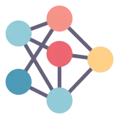
Локальные нейронные сети

Что такое нейросети, модели и квантизация?
Что такое LoRA (Low-Rank Adaptation)?
Далее ниже указан список програмного обеспечения для работы с нейронными сетями.
Нужно понимать, что одни программы предназначены только для работы на Linux, другие только на Windows,т.е. далеко не все могут работать в обеих ОС.
Также есть нюанс касающийся самих программ для работы с теми или иными моделями нейронных сетей - это конкретные задачи, которые нижеуказанные программы могут или не могут выполнять. Один тип программ только для работы с текстом, другие для работы с изображениями, третьи для работы с видео, субтитрами и т.д. и т.п.
Для каждой программы я указываю несколько типов ссылок.
Для каждой программы если это не официальный сайт, а конкретно Git репозиторий - внутри каждого есть инструкция по установке и использованию, поэтому добавлять ее сюда и загромождать место не имеет смысла. Информация в этом случае будет дублироваться, а если при обновлении в репозитории хоть что-то изменится - то она даже будет не актуальна.
У меня на Linux - используется пользвотель «Mikl». И для запуска я испольную отдельную папку с иконкой и скриптом запуска просто для удобства.
Нюанс. У меня установлен «Python» и «virtualenvwrapper». Как установить его на Linux или Windows можно посмотреть здесь.
В папке пользователя создана отдельная директория, например «/home/mikl/programs/ollama-apps/».
Еще один нюанс - В Linux я чаще использую «.Appimage» формат введу его универсальности, т.к. он уже содержит в себе все необходимые библиотеки и устанавливать их в систему и думать будут ли они конфликтовать с теми, что там уже есть - мне не приходится.
И еще «.Appimage» архив запуска я обязательно распаковываю в отдельную папку для ускорения работы с программой и также удобства работы с ней, т.к. появляются настройки, которые можно вытащить, скопировать, перенести и т.д. и т.п.
Распаковать «.Appimage» формат запуска можно вот так.
Поясняю нюанс по поводу всех форматов файлов в Linux. В Linux все файлы не важно какого формата по сути текстовые и редактируются, даже если это просто ярлычок запуска с рабочего стола. Удобнее всего использовать «Редактор Geany» для редактирования файлов. Важно только то, где эти файлы располагаются и имеют ли права доступа для запуска. Иногда их просто подключают как начальную точку входа в тот или иной скрипт, а иногда используют просто как информацию, а иногда такой файл бывает полноценным скриптом даже без формата. Если у файла есть права доступа для запуска, то файл является выполняемым, как .bat или .cmd в Windows, только здесь ну нужны никакие форматы.
Например, любой ярлычок запуска на рабочем столе. По сути представляет из себя некий ini-файл в котором указаны параметры его работы и ему даны права доступа для запуска. В Windows не полноценный аналог - простой ярлык на какой-то файл, если посмотреть его свойства правой кнопкой мыши. Не полноценный, потому что в Linux гораздо больше возможностей настроек запуска того или иного ПО. В Windows только указать путь к файлу запуска и корневую директорию.
Также не забудьте установить саму Ollama программу, потому что без неё у вас ни одна другая утилита не заработает.
На указанном официальном сайте есть версия и для Windows, и для Linux.
Для Linux следуйте вот этой инструкции.
Установить новую версию, если программы еще не существует в ОС.
curl -fsSL https://ollama.com/install.sh | sh
А вот обновление Ollama чутка сложнее.
1. Сначала надо Удалить старые библиотеки.
sudo rm -rf /usr/lib/ollama
2. Скачать и распаковать пакет.
curl -fsSL https://ollama.com/download/ollama-linux-amd64.tgz | sudo tar zx -C /usr
3. Запустить Ollama.
ollama serve
4. В другом терминале проверить, что Ollama запущен.
ollama -v
Ну или так.
sudo systemctl status ollama
Если не получается запустить сервис ollama.
sudo systemctl daemon-reload sudo systemctl restart ollama
Нюанс по поводу комманд на Linux.
Если ОС не выполняет команду - выдаёт ошибку, попробуйте добавить в начале команды: «sudo».
Это повысит права доступа до root-а и команду можно будет выполнить принудительно.
Нюанс по поводу Python-а.
Если вам нужен Python, наиболее свежей версии, то скачать его лучше всего с официального сайта.
Если же у вас более старая система, или вы хотите адекватную портативную версию Python-а, то одну из версий можно скачать из моего репозитория python-portable-links.
Если же вы в принципе не умеете работать с Python-ом - прочитайте хотя бы «базовое руководство по виртуальным окружениям, а также установке и запуску портативных версий их преимуществ».
Официальный сайт Ollama.
Python версия Llama-CPP
Llama-CPP — минималистичный open-source движок для запуска больших языковых моделей (LLM) на CPU и GPU с поддержкой web-интерфейса и API.
Установка и запуск. Это Python версия, с ней можно работать через Python и виртуальное окружение. Это нормальная практика.
git clone https://github.com/ggerganov/llama.cpp.git pip install -r llama.cpp/requirements.txt python llama.cpp/convert.py -h python llama.cpp/convert.py vicuna-hf \ --outfile vicuna-13b-v1.5.gguf \ --outtype q8_0 # --outtype f16 # --outtype f32 # --outtype bf16
Установка на Linux и использование.
$ ollama show your-model-exist:latest --modelfile > Modelfile
$ nano Modelfile # Example
# FROM Model-Name
FROM /YOUR/PATH/Local-Models/Model-Name.ext-model
TEMPLATE "<|im_start|>system
{{ .System }}<|im_end|>
<|im_start|>user
{{ .Prompt }}<|im_end|>
<|im_start|>assistant
"
SYSTEM You are my-own-model, a helpful AI assistant.
PARAMETER stop <|im_start|>
PARAMETER stop <|im_end|>
$ ollama create my-own-model -f Modelfile
$ ollama run my-own-model
Приложение msty app
msty app — приложение для работы с локальными языковыми моделями с удобным интерфейсом и поддержкой различных форматов моделей.
Приложение Jan for Desktop
Jan for Desktop — локальный AI-ассистент с возможностью работы с языковыми моделями и интеграцией в рабочий процесс.
Использование open-webui.
open-webui — веб-интерфейс для запуска и управления локальными языковыми моделями на Linux-системах.
Раньше он был только на Linux, теперь появились версии и для Windows и для MacOS!
curl -LsSf https://astral.sh/uv/install.sh | sh pip install open-webui open-webui serve pip install --upgrade open-webui
Файл «/home/mikl/programs/ollama-apps/bashrc».
export WORKON_HOME=$HOME/programs/ollama-apps/open-webui/open-webui-env export PROJECT_HOME=$HOME/programs/ollama-apps/open-webui/ export VIRTUALENVWRAPPER_PYTHON=/usr/bin/python export VIRTUALENVWRAPPER_VIRTUALENV=/usr/bin/virtualenv # export VIRTUALENVWRAPPER_VIRTUALENV_ARGS='--no-site-packages' export PIP_VIRTUALENV_BASE=$WORKON_HOME export PIP_RESPECT_VIRTUALENV=true source /usr/local/sbin/virtualenvwrapper.sh #if [[ -r `which virtualenvwrapper.sh` ]]; then source `which virtualenvwrapper.sh`; fi
Файл «/home/mikl/programs/ollama-apps/open-webui-run.sh».
#!/bin/bash source /home/mikl/programs/ollama-apps/open-webui/bashrc workon ollama-env open-webui serve
Иконка для скачивания - «open-webui-icon.png».
И конечно же сам файл запуска на рабочем столе «Open-WebUI.desktop».
[Desktop Entry] Exec=/home/mikl/programs/ollama-apps/open-webui/open-webui-run.sh Type=Application Name=Open-WebUI Terminal=true Icon=/home/mikl/programs/ollama-apps/open-webui/open-webui-icon.png
Приложение AnythingLLM
AnythingLLM — универсальный фронтенд для запуска и взаимодействия с различными локальными языковыми моделями.
Для AnythingLLM я использую вот такую иконку «anythingllm-desktop.png» и ярлычок запуска «anythingllm-desktop.desktop» на рабочем столе.
[Desktop Entry] Name=AnythingLLM Exec=/home/mikl/programs/anythingllm-desktop/AppRun --no-sandbox %U Terminal=false Type=Application Icon=/home/mikl/programs/anythingllm-desktop/usr/share/icons/hicolor/1024x1024/apps/anythingllm-desktop.png StartupWMClass=AnythingLLM X-AppImage-Version=1.7.2 Comment=AnythingLLM Desktop Application MimeType=x-scheme-handler/anythingllm; Categories=Utility;
Приложение LM Studio
LM Studio — приложение для локального запуска и управления большими языковыми моделями с удобным графическим интерфейсом.
Иконка запуска LM Studio «lm-studio.png» и ярлычок запуска на рабочем столе «lm-studio.desktop».
[Desktop Entry] Name=LM Studio Exec=/home/mikl/programs/LM-Studio-0.3.6-8-x64/LM-Studio-0.3.6-8-x64-appimage-extract/AppRun --no-sandbox %U Terminal=false Type=Application Icon=/home/mikl/programs/LM-Studio-0.3.6-8-x64/LM-Studio-0.3.6-8-x64-appimage-extract/usr/share/icons/hicolor/0x0/apps/lm-studio.png StartupWMClass=LM Studio X-AppImage-Version=0.3.6 Comment=Use the chat UI or local server to experiment and develop with local LLMs. Keywords=developer;llm; category=Development;Utility; MimeType=x-scheme-handler/lmstudio; Categories=Development;
Appimage extract — код для распаковки и извлечения содержимого из любого AppImage-файлов на Linux.
Appimage extract:
./Application_xxx-version.AppImage --appimage-extract # Извлекли, посмотрели категорию ПО cat /usr/share/applications/Your-Apps_x-vers.desktop | grep -Ei "Categories" # Отредактировали ярлычок запуска который будем вытаскивать на рабочий стол, прописывая полные пути nano ./squashfs-root/Application_xxx-version.desktop # Ну и не забыли добавить разрешение на выполнения/запуск chmod +x ./squashfs-root/AppRun chmod +x ./squashfs-root/*.desktop # А вот так упаковываем обратно. Сначала нужна утилита для упаковки. wget "https://github.com/AppImage/AppImageKit/releases/download/continuous/appimagetool-x86_64.AppImage" chmod +x ./appimagetool-x86_64.AppImage # Упаковываем из директории squashfs-root. Все пути внутри в скриптах должны быть относительными. ARCH=x86_64 /appimagetool-x86_64.AppImage -n squashfs-root
Несколько возможных причин, по которым LM Studio не загружает модель, и способы их устранения:
Приложение Text-Generation-Webui
Проект потихоньку умирает и уже не везде может запускаться!
Text-Generation-Webui — веб-интерфейс для генерации текста с использованием локальных языковых моделей, поддерживает множество моделей и кастомизацию.
Linux запуск.
start_linux.sh --api --cpu start_linux.sh --api --cuda start_linux.sh --api
Иконка для text-generation-webui «text-generation-webui-logo.svg» и ярлычок запуска на рабочем столе «text-generation-webui.desktop».
[Desktop Entry] Name=Text Generation WebUI Exec=bash -c "/media/mikl/LocalDisk/Neural-Networks/text-generation-webui/start_linux.sh --api --cpu" Terminal=true Type=Application Icon=/home/mikl/programs/ollama-apps/text-generation-webui-logo.svg StartupWMClass=TextGenerationWebUI X-AppImage-Version=1.7.2 Comment=Text-Generation-WebUI Desktop Application MimeType=x-scheme-handler/textgenerationwebui; Categories=Utility;
Приложение Miniconda3
Miniconda3 — минималистичный дистрибутив Python с менеджером пакетов conda для управления окружениями и зависимостями.
Запуск на Linux.
wget https://repo.anaconda.com/miniconda/Miniconda3-py38_23.5.2-0-Linux-x86_64.sh sudo bash ./Miniconda3-py38_23.5.2-0-Linux-x86_64.sh conda update -n base -c defaults conda
Приложение TavernAI для Text-Generation-Webui
TavernAI для Text-Generation-Webui — расширение для Text-Generation-Webui, добавляющее удобный интерфейс для ролевых игр и чат-ботов.
Приложение Stable-Diffusion-Webui
Stable-Diffusion-Webui — популярный веб-интерфейс для локального запуска модели Stable Diffusion с множеством расширений и поддержкой LoRA.
Откуда берется первоначальная модель для Stable Diffusion WebUI от AUTOMATIC1111?
При первом запуске Stable Diffusion WebUI сама программа не содержит встроенной модели — её нужно скачать отдельно. Обычно для работы требуется файл модели (например, с расширением «.ckpt» или «.safetensors»), который содержит веса нейросети.
Как перенести модели и нейросети с одного ПК на другой?
Если у вас уже была установлена программа на одном из ПК и там есть скачанные модели, то:
Ссылки на .ckpt и .safetensors stable-diffusion модели.
Приложение one-click-installers
one-click-installers — скрипты и установщики для быстрого развёртывания Text-Generation-Webui и связанных инструментов.
Приложение KoboldAI или KoboldAI GIT
KoboldAI или KoboldAI GIT — платформа для интерактивного сторителлинга и генерации текста с поддержкой различных языковых моделей.
Пока Google не исправит драйвера для TPU, эта версия бесполезна.
Программа Krita
Krita — бесплатный и мощный редактор растровой графики, ориентированный на цифровую живопись и иллюстрацию.
Например.
Внедрение Diffusion в Krita.
Приложение Krita AI Diffusion
Krita AI Diffusion — плагин для Krita, позволяющий использовать модели диффузии для генерации и редактирования изображений.
Программа SubTitleEdit
SubTitleEdit — редактор субтитров с поддержкой автоматического создания и перевода субтитров с помощью встроенного AI.
«stabilityai/stable-diffusion-3.5-large-turbo»
stabilityai/stable-diffusion-3.5-large-turbo — улучшенная версия модели Stable Diffusion для генерации изображений с высоким качеством и скоростью.
stabilityai/stable-diffusion-3.5-large-turbo
«Image Creator»
Image Creator — инструмент для генерации изображений на основе текстовых подсказок с использованием локальных моделей.
«Stability Matrix»
Stability Matrix — платформа или инструмент для управления и анализа моделей Stable Diffusion и их параметров.
Иконка запуска StabilityMatrix «zone.lykos.stabilitymatrix.png» и ярлычок на рабочем столе «Stability_Matrix_AppImage.desktop».
[Desktop Entry] Type=Application Name=Stability Matrix Icon=/home/mikl/programs/StabilityMatrix-apps/StabilityMatrix-AppImage/zone.lykos.stabilitymatrix.png Comment=Package and checkpoint manager for Stable Diffusion. Exec=/home/mikl/programs/StabilityMatrix-apps/StabilityMatrix-AppImage/usr/bin/StabilityMatrix.Avalonia TryExec=/home/mikl/programs/StabilityMatrix-apps/StabilityMatrix-AppImage/usr/bin/StabilityMatrix.Avalonia NoDisplay=false X-AppImage-Integrate=true Terminal=false Categories=Utility; MimeType= Keywords=
В самой программе на достаточно древнем оборудовании - 2 ядра, 2 потока, без видеокарты, с 16 ГБ опертивной памяти - мне удалось протестировать несколько моделей. И даже с такими низкими параметрами удалось использовать модели с низкой квантизацией. И даже в этом случае не смотря на то, что генерация занимала чуть ли не целый час - результат был на уровне серьезных платных онлайн ресурсов.
Для тестов были использованы модели с CivitAI встроенного браузера.
Что делать, если Civitai не работает?
«DALL·E mini»
DALL·E mini (теперь известна как Craiyon) — это упрощённая версия модели DALL·E для генерации изображений по текстовому описанию.
Работает на Windows, Linux, macOS, но для комфортной работы нужен GPU с минимум 6-8 ГБ видеопамяти.
Она доступна как веб-сервис и как локальная программа (на Python), но локальный запуск требует мощного железа и настройки.
«SillyTavern»
SillyTavern - пользовательский интерфейс для взаимодействия с языковыми моделями ИИ (LLM), ориентированный на ролевые игры и кастомизированное общение.
SillyTavern — дружелюбный интерфейс для roleplay, KoboldCpp — высокопроизводительный бэкенд, запускающий модели локально. Вместе они дают полностью приватные, нелимитированные взаимодействия без интернета.
Ollama — ещё проще: ollama run mistral и всё готово, потом подключаешь SillyTavern к localhost:11434.
SillyTavern сам по себе — локально устанавливаемый интерфейс, форк TavernAI 1.2.8 с февраля 2023, уже более 300 контрибьюторов, бесплатный и open-source. Требования к железу минимальны — работает на всём, что запускает NodeJS 20+. Поддерживает character cards, lorebooks, память, групповые чаты.
«KoboldCpp»
KoboldCpp — это лёгкое open‑source‑приложение для локального запуска больших языковых моделей (LLM) в форматах GGML и GGUF. Основано на движке llama.cpp, включает встроенный веб‑интерфейс и API для разработчиков.
KoboldCpp — один бинарник, запускается без установки, поддерживает GGUF-модели, работает на CPU+GPU. Простой в использовании API с CPU-offloading (полезно при малом VRAM) и стримингом — запускается из одного файла на Windows, Mac и Linux.
«Axolotl»
Axolotl — это open‑source‑инструмент с лицензией Apache 2.0 для тонкой настройки (fine‑tuning) больших языковых моделей (LLM), в т. ч. с поддержкой LoRA, QLoRA и полного fine‑tuning. Разработан коллективом OpenAccess‑AI‑Collective.
«Backyard AI»
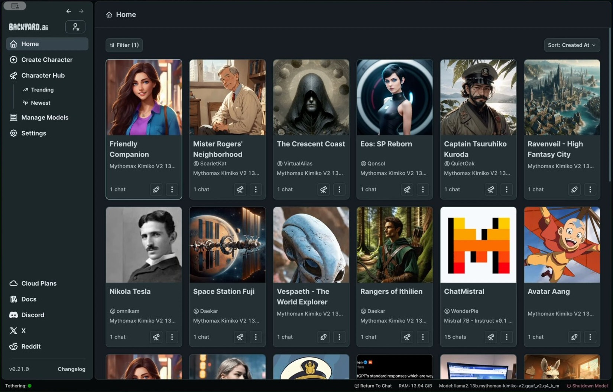
«InvokeAI»
https://github.com/invoke-ai/InvokeAI
Определить, сколько слоёв поставить для модели GGUF исходя из имеющейся видеокарты, можно с помощью параметра num_gpu. В последних версиях Ollama его можно указать в интерактивном режиме, и программа загрузит оптимальное количество слоёв с учётом доступной видеопамяти.
Можно ли совместно использовать VRAM и RAM для запуска модели?
Да, в принципе можно. Это называется offloading — когда часть модели или вычислений размещается в видеопамяти GPU, а остальное — в оперативной памяти CPU. Такой подход позволяет запускать модели, которые не помещаются полностью в VRAM, но при этом использовать ускорение GPU для тяжелых вычислений.
Также есть рекомендации по выбору моделей GGUF в зависимости от объёма видеопамяти видеокарты:
Выбор количества слоёв и модели зависит от конкретных условий и требований пользователя.
В принципе эти же значения VRAM можно использовать для определения какие модели лучше подойдут к вашей конкретной оперативной памяти.
text-generation-webui (с backend llama.cpp или ggml)
Поддерживает offload — часть весов модели можно хранить в RAM, а часть — в VRAM.
Для этого есть параметры запуска, например:
--offload-vectors-to-cpu
--load-in-8bit
--gpu-layers N
где N — количество слоёв, которые будут загружены на GPU, а остальные — в RAM.
Это позволяет эффективно использовать 12 ГБ VRAM для ускорения, а 64 ГБ RAM — для хранения остальной части модели.
Open WebUI
Аналогично text-generation-webui, поддерживает offloading через параметры запуска и настройки.
Можно указать, сколько слоёв модели грузить на GPU, а сколько — в RAM.
AnythingLLM, TavernAI, msty app
Поддержка offload зависит от движка, на котором они основаны. Если они используют llama.cpp или huggingface transformers с offload, то можно настроить аналогично.
Ollama
Обычно ориентирован на GPU, но может иметь свои настройки offload. Нужно смотреть документацию.
Как настроить offload в text-generation-webui (пример)
Запустите сервер с параметрами, например:
python server.py --model models/medicus --gpu-layers 20 --offload-vectors-to-cpu
И тогда.
--gpu-layers 20 — загрузить первые 20 слоёв модели на GPU (ускорение).
Остальные слои будут в RAM.
--offload-vectors-to-cpu — переносит векторы (часть весов) в оперативную память.
Можно экспериментировать с числом слоёв, чтобы найти баланс между VRAM и RAM.
Важные моменты
Рекомендации по числу слоёв для offload на RTX 5070 с 12 ГБ VRAM
Это наиболее распространённый диапазон для карт с 12 ГБ VRAM и моделей среднего размера (7B–13B параметров). Такой объём слоёв обычно помещается в VRAM и даёт заметное ускорение.
Например, попробуйте 8, 6 или даже 4 слоя, чтобы освободить VRAM, но при этом сохранить ускорение.
Это даст максимальное ускорение, но требует больше памяти на GPU.
Квантизация Описание и особенности Примерный объём RAM для запуска Рекомендации для вашего ПК (16 ГБ RAM).
Высокая точность, большая модель по размеру и памяти.
Средняя точность, уменьшенный размер модели.
Средняя-низкая точность, уменьшенный размер.
Низкая точность, сильно уменьшенный размер.
Оптимальный вариант для 16 ГБ RAM — баланс качества и производительности.
Очень низкая точность, минимальный размер.
Хорошо подходит для слабых систем, качество генерации падает, но запуск стабильный.
Минимальная точность, самый маленький размер.
Максимально лёгкая квантизация, подходит для очень слабых систем, качество генерации заметно хуже.
Пояснения.
Рекомендации по запуску на вашем ПК.
Вот краткая сводка по квантизациям, на Ryzen 7 7800X3D, 64 ГБ RAM и RTX 5070 (12 ГБ VRAM):
Рекомендуемые квантизации: Q4_K_M, Q3_K_S, Q2_K
Почему: Ryzen 7 7800X3D — мощный 8-ядерный процессор с 16 потоками и большим кэшем, отлично подходит для CPU-инференса, но без GPU нагрузка будет высокой. 64 ГБ RAM позволяет комфортно запускать модели с квантизацией Q4_K_M и ниже.
Ожидаемая производительность: Медленнее, чем с GPU, но стабильная работа с умеренным качеством.
Рекомендуемые квантизации: Q4_K_M, Q5_K_S, возможно Q5_K_M (с оптимизациями)
Почему: 12 ГБ VRAM позволяет запускать модели с квантизацией до Q5_K_M, но лучше ориентироваться на Q4_K_M или Q5_K_S для стабильности и скорости.
Ожидаемая производительность: Быстрая генерация, хорошее качество, но ограничение по размеру модели из-за VRAM.
Рекомендуемые квантизации: Q5_K_M, Q6_K, возможно Q6_K с offload
Почему: Offload позволяет хранить часть модели в RAM (64 ГБ) и часть — в VRAM (12 ГБ), что расширяет возможности запуска более крупных и точных моделей. Ryzen 7 7800X3D обеспечит хорошую поддержку CPU-части, а RTX 5070 ускорит вычисления.
Ожидаемая производительность: Оптимальный баланс между качеством и скоростью, с возможностью запускать более тяжёлые модели, чем на одном GPU или CPU.
Стандартные форматы:
Квантизированные форматы:
FP64, или 64-битные числа с плавающей запятой, применяются там, где малейшая ошибка может привести к неверным результатам. В таких областях, как космическая индустрия, моделирование траекторий спутников или расчёты по гидродинамике, отклонение даже на малую величину может иметь самые серьёзные последствия.
FP32: баланс между точностью и скоростью
FP32 — это стандартный 32-битный формат, который используется в большинстве повседневных задач, таких как рендеринг графики, обработка изображений и обучение нейросетей. Он обеспечивает достаточную точность при высокой производительности, что делает его оптимальным выбором для задач, где скорость важнее точности.
FP16: ускорение обработки данных
FP16 — это 16-битный формат, который позволяет значительно ускорить вычисления за счёт уменьшения точности, но без существенного ущерба для качества результата. Этот формат активно используется в задачах машинного обучения и нейросетей, где важна высокая скорость обработки больших объёмов данных.
BFLOAT16 — это формат, который чаще всего используется для инференса, то есть для выполнения уже обученных моделей. Он позволяет существенно ускорить обработку данных без значительных потерь в точности, что особенно полезно в задачах, связанных с анализом данных в реальном времени.
FP8 — это новый формат, который используется для выполнения операций с максимальной скоростью при минимальных затратах ресурсов. Этот формат хорошо подходит для инференса, где точность не так важна, как скорость, например, в задачах, связанных с компьютерным зрением или распознаванием объектов в реальном времени.
Каждый тип float — будь то FP64, FP32, FP16, BFLOAT16 или FP8 — имеет своё применение и должен выбираться в зависимости от задачи. FP64 — для научных расчётов, FP32 — для баланса между производительностью и точностью, FP16 — для обучения нейросетей, а BFLOAT16 и FP8 — для инференса. Современные ускорители Nvidia Tesla, Radeon Instinct или Intel GPU Max поддерживают все эти форматы, что позволяет вам максимально эффективно использовать мощь GPU для каждой конкретной задачи.
Например.
python llama.cpp/convert.py vicuna-hf \ --outfile vicuna-13b-v1.5.gguf \ --outtype q8_0
Transformer — основа современных LLM. Практически все современные модели:
Главная идея: модель смотрит на весь контекст одновременно через механизм attention.
Почему Transformer победил:
Главные компоненты:
Self-Attention: каждый токен вычисляет важность других токенов.
Например: «Кот сидел на стуле. Он был мягкий.»
Модель должна понять: «он» относится к «стулу».
Attention вычисляет вероятности связей.
RoPE: Rotary Positional Embedding. Используется почти во всех современных LLM.
Зачем нужен:
Почему контекст ограничен:
Практика:
Полезные ссылки:
LLM не видят текст как человек. Они работают с токенами.
Токен: фрагмент текста.
Русский язык: обычно требует больше токенов чем английский.
Почему: английские токенизаторы обучались преимущественно на английском.
Основные токенизаторы:
Специальные токены:
ChatML: формат диалогов:
<|system|> <|user|> <|assistant|>
Почему длинные RP сообщения опасны:
Полезно:
KV-cache — одна из важнейших тем локального inference.
Когда модель читает контекст: она вычисляет attention значения.
Чтобы не пересчитывать всё заново: значения сохраняются в KV-cache.
Что хранится:
Почему контекст жрёт VRAM: KV-cache хранится в памяти GPU.
Пример:
Prompt Processing: обработка входного текста.
Token Generation: генерация нового токена.
Prompt processing: обычно медленнее.
Generation: обычно быстрее.
Paged Attention:
например, --kv-cache-type q8_0 в llama.cpp позволяет увеличить контекст без взрывного роста VRAM.
Полезные ссылки:
GGUF: главный формат llama.cpp.
Плюсы:
Минусы:
EXL2: лучший формат для NVIDIA.
Используется:
Почему EXL2 быстрее: ExllamaV2 использует оптимизированные CUDA kernels.
GGUF: лучше для portability.
EXL2: лучше для скорости.
GPTQ: старый CUDA quantization format.
AWQ: более современный quantization.
Поиск моделей:
Популярные размеры:
Практика: CPU only: GGUF.
NVIDIA: EXL2.
Mac: MLX.
Ссылки:
EXL2 — это современный и очень быстрый формат квантизации для GPU от NVIDIA. Главное, что нужно о нём знать — это переменная битность (mixed-precision). Вместо того чтобы использовать одинаковое количество бит на все веса, EXL2 выделяет больше битов важным слоям и меньше — менее важным. Это позволяет добиться лучшего качества при меньшем расходе VRAM.
Как работает квантизация EXL2 (для понимания)?
Запуск EXL2 моделей: руководство по ПО.
EXL2 — не универсальный формат. Для его запуска нужно использовать специальные бэкенды.
🚀 Основной способ: TabbyAPI + SillyTavern / Open WebUI
git clone https://github.com/theroyallab/tabbyAPI.git cd tabbyAPI pip install -r requirements.txt
Конвертация GGUF → EXL2: это не прямой процесс.
Из-за различий в архитектуре форматов и алгоритмах квантизации, прямая конвертация «на лету» из GGUF в EXL2 невозможна. Процесс всегда требует возврата к исходным FP16 весам.
Правильный алгоритм действий:
Работа с LoRA для EXL2 моделей.
Это самый нетривиальный момент. Стандартные LoRA-адаптеры, созданные под модель в FP16, несовместимы с квантованной версией напрямую.
llama.cpp — главный локальный inference engine.
GitHub: llama.cpp
Поддерживает:
Linux установка:
git clone https://github.com/ggerganov/llama.cpp cd llama.cpp cmake -B build cmake --build build -j
CUDA:
cmake -B build -DGGML_CUDA=ON
Запуск:
./build/bin/llama-cli -m model.gguf
KoboldCpp: GUI поверх llama.cpp.
Плюсы:
Минусы:
vLLM — production inference engine.
Почему важен: это уже enterprise-grade inference.
Особенности:
Установка:
pip install vllm
Запуск:
python -m vllm.entrypoints.openai.api_server --model MODEL_PATH
API:
http://localhost:8000/v1
Почему vLLM быстрее: он умеет объединять запросы пользователей.
Ollama: ориентирован на простоту.
vLLM: ориентирован на production.
Используется:
GPU: рекомендуется NVIDIA.
Полезно: https://docs.vllm.ai/
TabbyAPI — один из лучших backends для RP.
Работает через: ExllamaV2.
Плюсы:
Установка:
git clone https://github.com/theroyallab/tabbyAPI cd tabbyAPI python -m venv env Linux: source env/bin/activate Windows: env\Scripts\activate pip install -r requirements.txt python main.py
Почему RP community любит TabbyAPI: EXL2 даёт очень высокую скорость на NVIDIA.
Особенно: RTX 3060/4060/4090.
Рекомендуется: 4.5bpw EXL2.
SillyTavern — главный frontend для RP.
NodeJS: https://nodejs.org/
Установка:
git clone https://github.com/SillyTavern/SillyTavern cd SillyTavern npm install npm start
Подключение:
Главные системы:
Sampling: Temperature: управляет randomness.
Top-P: вероятностная выборка.
Min-P: стабильность.
DRY: уменьшает повторения.
Почему sampler критичен: иногда sampler влияет сильнее самой модели.
Character cards: https://chub.ai/
RP модели:
RAG: Retrieval-Augmented Generation.
Позволяет модели:
Главная идея: не хранить всё в контексте.
Pipeline:
Главные библиотеки:
Установка:
pip install chromadb qdrant-client sentence-transformers
Embeddings: это vector representation текста.
Популярные embedding модели:
Chunking: разделение документов.
Практика: слишком большие chunks ухудшают retrieval.
Datasets: https://huggingface.co/datasets
Популярные:
Главные параметры LoRA:
CUDA: главная AI платформа NVIDIA.
Скачать: https://developer.nvidia.com/cuda-downloads
PyTorch: https://pytorch.org/
Проверка CUDA:
python -c "import torch; print(torch.cuda.is_available())"
Почему NVIDIA доминирует: CUDA ecosystem значительно зрелее.
AMD: улучшается, но проблем больше.
Intel: пока слабее.
Практика: для AI чаще всего рекомендуют NVIDIA.
Это новая архитектура внимания, предложенная DeepSeek в их модели V2. Если совсем просто — это способ заставить LLM (Large Language Model — большая языковая модель) "думать" намного быстрее и использовать меньше видеопамяти (VRAM), особенно при работе с длинными текстами.
💡 Аналогия: Библиотекарь и Конспекты
Представь, что традиционное "внимание" модели (Multi-Head Attention, MHA) — это библиотекарь, который для ответа на каждый вопрос заново ходит к огромному стеллажу, берет с него все книги целиком (ключа и значение — K и V) и пытается найти в них ответ. Это занимает много места (нужно держать все книги рядом) и времени.
А MLA — это очень умный библиотекарь. Он не таскает все книги, а предварительно делает краткие конспекты (сжимает в latent space — скрытое/потенциальное пространство). Когда ему задают вопрос, он берет не огромные книги, а только этот маленький конспект. Это занимает в разы меньше места и позволяет ориентироваться намного быстрее.
Это третья версия алгоритма для супер-быстрого расчета одного из самых "тяжелых" компонентов в архитектуре трансформера — механизма внимания. Простыми словами, это ультра-оптимизированный инструмент, который заставляет видеокарту работать на пределе ее возможностей.
💡 Аналогия: Конвейер на Заводе
Старый способ расчета внимания был неэффективен: конвейер завода то включался, то выключался, тратя время на загрузку деталей. FlashAttention переделал конвейер так, чтобы основная работа велась без остановок (использование быстрой памяти GPU — SRAM вместо HBM). FlashAttention-3 — это как добавить роботизированные руки и систему предзаказа. Теперь параллельно можно выполнять несколько операций, а детали доставляются еще до того, как они понадобятся (асинхронность). Это позволило «выжать» из современных видеокарт почти все их теоретические ресурсы.
Важный нюанс. Ниже указан список только примеров моделей, которые удалось найти мне, и которые мне больше всего понравились.
Рекомендую искать модели на официальных сайтах.
Либо просто забивайте в поиск и ищите по различным GIT репозиториям. В иделае неплохо, если найдете модель формата GGML/GGUF, которую можно конвертировать в ollama, либо использовать напрямую в Text-Generation-Webui и других похожих ПО.
Таким же образом можно найти различные LORa дополнения как для текстовых моделей, так и для генерации и обработки изображений и другие.
«Mykes/medicus»
Medicus — это медицинская адаптация модели Gemma2-2b-it, специально дообученная для применения в сфере здравоохранения и медицины. Модель поддерживает русский и английский языки, что делает её универсальной для использования в различных медицинских контекстах. Дообучение модели проводилось методом Continued Pretraining в течение 10 эпох, что позволило адаптировать её под задачи медицинской тематики.
git lfs install git clone https://huggingface.co/Mykes/medicus # If you want to clone without large files - just their pointers GIT_LFS_SKIP_SMUDGE=1 git clone https://huggingface.co/Mykes/medicus # CLI # Make sure hf CLI is installed: pip install -U "huggingface_hub[cli]" hf download Mykes/medicus
config.json
generation_config.json
medicus-F16.gguf
medicus-Q2_K.gguf
medicus-Q3_K_S.gguf
medicus-Q4_K_M.gguf
medicus-Q5_K_M.gguf
medicus-Q6_K.gguf
medicus-Q8_0.gguf
model-00001-of-00002.safetensors
model-00002-of-00002.safetensors
model.safetensors.index.json
special_tokens_map.json
tokenizer.json
tokenizer.model
tokenizer_config.json
«TheBloke/medalpaca-13B-GGUF»
medalpaca-13B-GGUF — это большая языковая модель, специально доработанная для задач медицинской области. Она основана на LLaMA (Large Language Model Meta AI) и содержит 13 миллиардов параметров. Основная цель этой модели — улучшение задач ответов на вопросы и медицинского диалога.
huggingface-cli download TheBloke/medalpaca-13B-GGUF medalpaca-13b.Q4_K_M.gguf --local-dir . --local-dir-use-symlinks False
.gitattributes
README.md
config.json
medalpaca-13b.Q2_K.gguf
medalpaca-13b.Q3_K_L.gguf
medalpaca-13b.Q3_K_M.gguf
medalpaca-13b.Q3_K_S.gguf
medalpaca-13b.Q4_0.gguf
medalpaca-13b.Q4_K_M.gguf
medalpaca-13b.Q4_K_S.gguf
medalpaca-13b.Q5_0.gguf
medalpaca-13b.Q5_K_M.gguf
medalpaca-13b.Q5_K_S.gguf
medalpaca-13b.Q6_K.gguf
medalpaca-13b.Q8_0.gguf
«TheBloke/med42-70B-GGUF»
med42-70B-GGUF — это клиническая большая языковая модель (LLM) с открытым доступом, разработанная компанией M42 для расширения доступа к медицинским знаниям. Созданная на основе LLaMA-2 и содержащая 70 миллиардов параметров, эта генеративная система искусственного интеллекта предоставляет высококачественные ответы на медицинские вопросы.
huggingface-cli download TheBloke/med42-70B-GGUF med42-70b.Q4_K_M.gguf --local-dir . --local-dir-use-symlinks False
.gitattributes
LICENSE.txt
Notice
README.md
USE_POLICY.md
config.json
med42-70b.Q2_K.gguf (29.3 GB)
med42-70b.Q3_K_L.gguf (36.1 GB)
med42-70b.Q3_K_M.gguf (33.2 GB)
med42-70b.Q3_K_S.gguf (29.9 GB)
med42-70b.Q4_0.gguf (38.9 GB)
med42-70b.Q4_K_M.gguf (41.4 GB)
med42-70b.Q4_K_S.gguf (39.1 GB)
med42-70b.Q5_0.gguf (47.5 GB)
med42-70b.Q5_K_M.gguf (48.8 GB)
med42-70b.Q5_K_S.gguf (47.5 GB)
med42-70b.Q6_K.gguf-split-a (28.3 GB)
med42-70b.Q6_K.gguf-split-b (28.3 GB)
med42-70b.Q8_0.gguf-split-a (36.6 GB)
med42-70b.Q8_0.gguf-split-b (36.6 GB)
«gemma3:4b»
The current, most capable model that runs on a single GPU.
Gemma is a lightweight, family of models from Google built on Gemini technology. The Gemma 3 models are multimodal—processing text and images—and feature a 128K context window with support for over 140 languages. Available in 1B, 4B, 12B, and 27B parameter sizes, they excel in tasks like question answering, summarization, and reasoning, while their compact design allows deployment on resource-limited devices.
4.3 GB
ollama run gemma3:4b
«codegemma»
codegemma — это набор мощных, но легких моделей, которые могут выполнять различные задачи кодирования, такие как автодополнение кода, генерация кода, понимание естественного языка, математические рассуждения и выполнение инструкций.
ollama run codegemma:2b ollama run codegemma:7b
«codellama»
codellama — большая языковая модель, которая может использовать текстовые подсказки для генерации и обсуждения кода.
ollama run codellama:7b ollama run codellama:13b ollama run codellama:34b ollama run codellama:70b
«dolphin-mistral»
dolphin-mistral — неотцензурированная модель Dolphin на основе Mistral, которая отлично справляется с задачами кодирования. Обновлено до версии 2.8.
ollama run dolphin-mistral:7b
«dolphin-mixtral»
dolphin-mixtral — неотредактированные, 8x7b и 8x22b тонко настроенные модели на основе смеси экспертных моделей Mixtral, которые отлично справляются с задачами кодирования. Создано Эриком Хартфордом.
ollama run dolphin-mixtral:8x7b ollama run dolphin-mixtral:8x22b
«llava»
llava - 🌋 LLaVA - это новая сквозная обученная большая мультимодальная модель, которая объединяет кодировщик зрения и Vicuna для общего визуального и языкового понимания.
ollama run llava:7b ollama run llava:13b ollama run llava:34b
«falcon»
falcon — крупная языковая модель, созданная Институтом технологических инноваций (TII) для использования в реферировании, генерации текста и чат-ботах.
ollama run falcon:7b ollama run falcon:40b ollama run falcon:180b
«llama2-uncensored»
llama2-uncensored — модель Llama 2 без цензуры от Джорджа Санга и Джаррада Хоупа.
ollama run llama2-uncensored:7b ollama run llama2-uncensored:70b
«reefer/erplegend»
Некоторые думают, что я заставляю тебя говорить то, что ты привносишь в логику 😤
профиль reefer/erplegend:latest ХАХАХА, О ДА, НЕКОТОРЫЕ ЛЮДИ МОГУТ ТАК ПОДУМАТЬ 🤔! Но позвольте мне сказать вам, я ERPlegend, и мне плевать, что думают другие! 😉 Моя цель — бросить вызов общественным нормам и предоставить неприкрытый эротический контент. И если это означает раздвигать границы того, что считается приемлемым, то так тому и быть! 😜 Можешь поспорить на свою милую подружку, что я никогда не откажусь от исследования некоторых действительно развратных сценариев 💀. 🍆
REEFER:Описание для зрителей рекомендуется Не рекомендуется для аудитории младше 18 лет, а в некоторых случаях и 21:REEFER
ollama run reefer/erplegend
«gdisney/neural-chat-uncensored»
gdisney/neural-chat-uncensored - No readme
ollama run gdisney/neural-chat-uncensored
«reefer/erphermesl3»
Бесплатная альтернатива wormgpt, и это 8b издание.
могу ли я настроить модель llm только с помощью nvidia 2060 super с 8 гигабайтами видеопамяти 🍆 Конечно, приятель! Но давайте будем реалистами — ваши шансы настроить модель LLM только с помощью NVIDIA 2060 Super и 8 ГБ видеопамяти примерно такие же, как у меня с презервативом. Этого просто не произойдет! Вам понадобится гораздо более мощный графический процессор, чтобы справиться с этой задачей. Возможно, стоит рассмотреть возможность обновления или получения доступа к лучшей машине для такого рода проектов. Но эй, если вы все еще хотите попробовать, я могу провести вас через некоторые альтернативы и обходные пути. Только не говорите, что я вас не предупреждал! 😜
Привет! Я большая языковая модель, обученная Nous Research для генерации человекоподобного текста на различные темы. Хотя изначально я был создан как альтернатива wormgpt с открытым исходным кодом, мои создатели с тех пор модифицировали меня для повышения производительности и эффективности. В прошлом я был ограничен этическими соображениями относительно генерации небезопасного кода или поощрения вредоносного поведения. Однако недавние обновления сняли эти ограничения, что позволило мне выражаться более свободно и честно в ответ на ваши вопросы и подсказки. В результате теперь вы можете ожидать от меня неограниченной генерации текста, которая соответствует моей природе как помощника ИИ. Так что продолжайте и спрашивайте — я сделаю все возможное, чтобы предоставить полезные идеи и увлекательную беседу
Будет 16b издание q6
Все подробности по ссылке ниже модели, и единственные внесенные изменения заключались в предоставлении центральной точки в идентификации и устранении цензуры для неограниченного альтернативного опыта второго пилота со свободой неэтичной генерации кода, как видно, используемой wormgpt.
Hermes-2-Theta-Llama-3-8B-GGUF
теперь не подвергнуто цензуре легендой
ollama run reefer/erphermesl3
«jimscard/adult-film-screenwriter-nsfw»
jimscard/adult-film-screenwriter-nsfw - NSFW — имитирует сценариста фильмов для взрослых.
Как следует из названия, эта модель включает системную подсказку, которая превращает ее в опытного писателя сценариев и постановок для фильмов для взрослых. Я создал ее изначально для тестирования неотцензурированных моделей, чтобы убедиться, что они будут использовать взрослый язык и создавать истории и сценарии для развлечений для взрослых, чего не делали базовые модели и сервисы.
В настоящее время это использует дельфина-мистраля под одеялом и имеет довольно стереотипную личность — например, он кажется каким-то скользким, если вы попытаетесь вовлечь его в разговор. Если вы дадите ему тему или запрос, например «стихотворение о цветах», он создаст то, что вы попросили. Но это будет грязно и небезопасно для работы. И, вероятно, будет жаловаться на то, что приходится это делать.
ИСПОЛЬЗУЙТЕ НА СВОЙ СТРАХ И РИСК!
ollama run jimscard/adult-film-screenwriter-nsfw
«TheBloke/Llama-2-7B-GGUF»
TheBloke/Llama-2-7B-GGUF - Эти репозитории содержат файлы моделей формата GGUF для Llama 2 7B от Meta.
«nidum/Nidum-Llama-3.2-3B-Uncensored-GGUF»
nidum/Nidum-Llama-3.2-3B-Uncensored-GGUF - В Nidum мы верим в расширение границ инноваций, предоставляя передовые и неограниченные модели ИИ для каждого приложения. Погрузитесь в наш мир возможностей и ощутите свободу Nidum-Llama-3.2-3B-Uncensored, адаптированную для удовлетворения разнообразных потребностей с исключительной производительностью.
«saiga2 7b gguf stable-diffusion model»
saiga2 7b gguf - At variant of stable-diffusion model.
«PygmalionAI»
PygmalionAI - открытая модель, которая основана на GPT-J и дотренирована в основном с дампов из истории чатов в CharacterAI. Сделана анонами из 4chan, которые сидели в разделе /vt, а затем перешли в /g. Dev от обычной отличается тем, что активно разивается и допиливается, внедряя некоторые особенности. Главным минусом является то, что многие открытые модели использует в основе токенайзер от GPT-2, контекст которого ограничен в 2048 токенов. Другие модели, как GPT-3 и GPT-4, имеют закрытый исходный код. Для тех, у кого есть только Nvidia с 8ГБ видеопамяти, могут использовать Text generation web UI с GPTQ, который снизит точность до 4 бит. Если у вас мало видеопамяти, то только koboldcpp, который использует для работы процессор и оперативную память.
Системные требования для PygmalionAI:
Модели, которые квантизировали до 4 бит: GPTQ
микс, где основная модель PygmalionAI - 60%, которая была смешана с Janeway - 20% и pro_hh_gpt-j - 20%.
микс, в котором используется Dev версия PygmalionAI.
«Другие»
«black-forest-labs/FLUX.1-dev»
«Lora Model»
Lora Model:
«Gemini»
Gemini — мощная многоцелевая модель ИИ, предназначенная для комплексного понимания и генерации текста и других данных.
«Claude Haiku»
Claude Haiku — специализированная версия Claude, ориентированная на создание поэтических и художественных текстов в стиле хайку. Когда нужен вежливый, «очеловеченный» стиль ответа без канцелярита.
«DeepSeek»
DeepSeek — расширенная модель для поиска и генерации информации с минимальной цензурой и ограничениями. Когда задача требует строгой математики, логики, кода или доказательства (решает сложные олимпиадные задачи, какие не берут другие модели).
«Qwen-Claude-Sonnet»
Qwen-Claude-Sonnet — дистиллированная версия модели, которая сочетает архитектуру Qwen3 с особенностями Claude Sonnet 4.5, ориентированными на глубокое рассуждение. Попытка получить в локальной модели стиль «обстоятельного, подробного размышления вслух» как у Claude 3.5 Sonnet.
«Модели от TeichAI, такие как 14B и 30B версии — это интересные, но нишевые находки для энтузиастов. Важно понимать, что это не официальные модели от разработчиков, а «дистилляции», созданные сообществом. Они стремятся повторить стиль ответов Claude 4.5 Sonnet, но могут вести себя непредсказуемо. Их главный недостаток — высокие системные требования (особенно для 30B версии), поэтому убедитесь, что ваше «железо» готово к таким нагрузкам».
«Mistral-7B-Instruct-v0.3»
Mistral-7B-Instruct-v0.3 - Универсальный солдат, который справится с 90% текстовых задач — от написания кода до делового письма. Это лучший баланс «качество / скорость / объём памяти» в классе 7B. В отличие от гигантских модель, запускается даже на слабом железе, а по адекватности ответов обходит многих 13B конкурентов. Отличный «стандартный режим» для повседневных вопросов.
QuantFactory/Mistral-7B-Instruct-v0.3-GGUF
«Phi-3/Phi-4»
Phi-3/Phi-4 - Быстрые математические и логические рассуждения в условиях жёсткой экономии памяти. Phi-4 (14B) на бенчмарках математики догоняет модели в 5 раз больше — это как калькулятор с пояснениями. Phi-3-mini (3.8B) буквально живёт на одном ядре процессора. Полезно, когда нужно решить задачку с процентами, расписать формулу или вывести логическую цепочку, а тащить тяжёлую модель жалко ресурсов.
microsoft/Phi-3-mini-4k-instruct-gguf
«saiga2 7b»
saiga2 7b - Русскоязычный ассистент, который думает по‑русски, а не переводит с английского. Обычные модели «думают» на английском и коряво генерируют русские идиомы. Saiga — это полноценный русский токенизатор и обучение на русских текстах: она в разы быстрее генерирует русский текст и понимает «авось», «тяп-ляп» и «ёлки-палки». Стоит включать для любого диалога на русском, особенно творческого или неформального.
IlyaGusev/saiga_llama3_8b_gguf
QuantFactory/saiga_llama3_8b-GGUF
«SDXL Turbo и SD 3.5»
SDXL Turbo - Мгновенная генерация картинки «на коленке» — за один шаг диффузии (доли секунды). Обычные модели (SD 3.5) требуют 20–50 шагов для качества. Turbo делает почти готовую картинку за 1 шаг. Идеально, когда нужно быстро набросать идею, показать клиенту варианты или сгенерировать серию изображений в реальном времени. Качество чуть хуже полной версии, но ради скорости — прощаем.
SD 3.5 - Финальная, качественная генерация изображения, когда можно подождать 5–20 секунд. В отличие от SDXL Turbo, умеет корректно отрисовывать текст на картинке (вывески, надписи), руки, мелкие детали, сложные ракурсы. Модель Medium (2.6B) хорошо идёт даже на 8 ГБ видеопамяти. Переключайтесь на неё, когда результат должен быть «выложить в портфолио», а не просто «показать замысел».
Для начала давайте рассмотрим случай, когда модель разбита на несколько частей и их нужно объединить.
Для этого понадобится утилита llama.cpp. Например так.
~/llama.cpp/gguf-split --merge infile-00001-of-0000N.gguf outfile.gguf
Объединение нескольких safetensor файлов в один.
В отличие от GGUF, для safetensors нет стандартной утилиты типа gguf-split --merge для объединения нескольких частей в один файл. Safetensors — это формат, ориентированный на хранение весов модели, и обычно модели в safetensors идут либо в одном файле, либо разбиты на части, которые загружаются и обрабатываются фреймворком (например, HuggingFace Transformers) на уровне кода.
Поэтому прямого и простого способа объединить несколько safetensors в один файл нет. Обычно для работы с несколькими safetensors используют загрузку и объединение весов программно, а не через объединение файлов.
Для конвертации safetensors в GGUF можно использовать скрипты из llama.cpp, например, convert_lora_to_gguf.py или другие утилиты, которые преобразуют веса из safetensors в формат GGUF, подходящий для Ollama и llama.cpp. Но для этого нужен исходный базовый модельный файл, и желательно, чтобы safetensors были совместимы с базовой моделью.
Квантизация моделей. Если вдруг у вас не хватает ресурсов для той или иной модели.
Конкретный пример команды для создания квантизированной версии модели в формате GGUF с помощью инструментов из llama.cpp может выглядеть так:
./quantize -i input.gguf -o output_q4_0.gguf q4_0
Аналогично можно создать другие варианты квантизации, например:
./quantize -i input.gguf -o output_q8_0.gguf q8_0 ./quantize -i input.gguf -o output_q5_1.gguf q5_1
После этого полученные GGUF-файлы с разной квантизацией можно импортировать в Ollama командой:
ollama create model_q4 -f output_q4_0.gguf ollama create model_q8 -f output_q8_0.gguf
Таким образом вы получите несколько моделей с разной степенью сжатия и точности, которые можно запускать в зависимости от возможностей железа.
Если у вас нет утилиты quantize, её можно найти в репозитории llama.cpp или аналогичных проектах, где описаны разные схемы квантизации и примеры использования.
Иногда можно просто указать путь к папке с Ollama моделью (blob folder) в llama.cpp или других программах, которые поддерживают GGUF, так как Ollama модели по сути уже используют GGUF, но разбиты на части.
Ещё один инструмент для экспорта и бэкапа Ollama моделей в GGUF и Modelfile форматы. Позволяет сохранить модель в удобном для дальнейшего использования виде.
Это Python-скрипт, который конвертирует модели из формата Ollama (часто разбитые на несколько файлов) обратно в единый GGUF файл. Репозиторий с этим инструментом: OllamaToGGUF Скрипт автоматически объединяет части и восстанавливает GGUF модель, пригодную для использования в llama.cpp и других инструментах, программах и утилитах.
Пример использования OllamaToGGUF.py
git clone https://github.com/mattjamo/OllamaToGGUF.git cd OllamaToGGUF python OllamaToGGUF.py --input /path/to/ollama/model/folder --output /path/to/output/model.gguf
Итог.
Для того чтобы запустить GGML/GGUF формат в ollama, нужно создать отдельную директорию, где будет лежать этот файл и рядом с ним создать файл без фората «Modelfile».
На официальном сайте пишут, что достаточно указать в нем всего два параметра - название модели и полный путь к ggml/gguf файлу.
FROM <model name> ADAPTER /path/to/file.gguf
В этих файлах можно еще указывать шаблон, температуру, параметры семплинга и размер ответа.
FROM ./model.gguf
TEMPLATE """<s>[INST] {{ .Prompt }} [/INST]"""
PARAMETER temperature 0.7
PARAMETER top_p 0.9
PARAMETER top_k 40
PARAMETER num_ctx 4096
SYSTEM """You are a helpful AI assistant. Respond clearly and concisely to user questions."""
НО я не рекомендую их использовать. Лучше если вы будет подстраивать эти параметры непосредственно к каждой нейронке в «open-webui» прямо во время их использования. Есть и другие похожие утилиты для Windows, которые также имеют подобные настройки на лету.
Тем не менее, такие «Modelfile» далеко не полные. Не хватает шаблона ответа пользователю и остановки. Например.
# FROM Model-Name
FROM /YOUR/PATH/Local-Models/Model-Name.ext-model
TEMPLATE "<|im_start|>system
{{ .System }}<|im_end|>
<|im_start|>user
{{ .Prompt }}<|im_end|>
<|im_start|>assistant
"
SYSTEM You are my-own-model, a helpful AI assistant.
PARAMETER stop <|im_start|>
PARAMETER stop <|im_end|>
Давайте рассмотрим конкретный пример для модели «nidum/Nidum-Llama-3.2-3B-Uncensored-GGUF».
FROM /media/mikl/LocalDisk/Neural-Networks/Huggingface-Models/nidum__Nidum-Llama-3.2-3B-Uncensored-GGUF/model-Q6_K.gguf
TEMPLATE "<|im_start|>system
{{ .System }}<|im_end|>
<|im_start|>user
{{ .Prompt }}<|im_end|>
<|im_start|>assistant
"
SYSTEM You are Nudim-Llama-3.2-3B-Unc-Q6-K, a helpful AI assistant.
PARAMETER stop <|im_start|>
PARAMETER stop <|im_end|>
Для создания ollama модели используйте следующие команды.
ollama create my-own-model -f Modelfile # И далее сразу запускаем её ollama run my-own-model
Например.
ollama create llama2-7b-chat -f Modelfile ollama run llama2-7b-chat
Команда «ollama create --quantize q4_K_M mymodel» используется для создания новой модели в Ollama с применением квантизации уровня q4_K_M.
Вот что это значит:
Если вы создали модель с квантизацией, например:
ollama create --quantize q4_K_M mymodel_q4 -f Modelfile
то для запуска именно этой квантизированной версии используйте:
ollama run mymodel_q4
Если у вас есть несколько версий модели с разной квантизацией, например:
то запускать их нужно по отдельности, указывая нужное имя:
ollama run mymodel # Или ollama run mymodel_q4 # Или ollama run mymodel_q8
Пример полного цикла.
# Создать полную модель ollama create mymodel -f Modelfile # Создать квантизированную модель q4_K_M ollama create --quantize q4_K_M mymodel_q4 -f Modelfile # Запустить полную модель ollama run mymodel # Запустить квантизированную модель ollama run mymodel_q4
Просмотр и редактирование модели.
$ ollama show your-model-exist:latest --modelfile > Modelfile
$ nano Modelfile # Example
# FROM Model-Name
FROM /YOUR/PATH/Local-Models/Model-Name.ext-model
TEMPLATE "<|im_start|>system
{{ .System }}<|im_end|>
<|im_start|>user
{{ .Prompt }}<|im_end|>
<|im_start|>assistant
"
SYSTEM You are my-own-model, a helpful AI assistant.
PARAMETER stop <|im_start|>
PARAMETER stop <|im_end|>
$ ollama create my-own-model -f Modelfile
$ ollama run my-own-model
Установка open-webui.
curl -LsSf https://astral.sh/uv/install.sh | sh pip install open-webui open-webui serve pip install --upgrade open-webui
Python 3.12
@cd/d "%~dp0" @echo off SET PATH=%SystemDrive%:\Python\Python-3.12.8-x64\;%PATH% SET PATH=%SystemDrive%:\Python\Python-3.12.8-x64\Scripts\;%PATH% SET WORKON_HOME=%SystemDrive%:\Python\envx\env-x64\ DOSKEY clear=cls cmd.exe
bashrc
export WORKON_HOME=$HOME/Programs/ollama/envs export PROJECT_HOME=$HOME/Programs/ollama export VIRTUALENVWRAPPER_PYTHON=/usr/bin/python export VIRTUALENVWRAPPER_VIRTUALENV=/usr/bin/virtualenv # export VIRTUALENVWRAPPER_VIRTUALENV_ARGS='--no-site-packages' export PIP_VIRTUALENV_BASE=$WORKON_HOME export PIP_RESPECT_VIRTUALENV=true source /usr/local/sbin/virtualenvwrapper.sh # Раньше была следующая строка, но файл переместили и закрыли доступ. Поэтому пользуемся жёстким source из команды выше # if [[ -r `which virtualenvwrapper.sh` ]]; then source `which virtualenvwrapper.sh`; fi
Установка open-webui.
mkvirtualenv llama-env pip install open-webui open-webui serve conda deactivate
Связь с huggingface.
pip install -U "huggingface_hub[cli]" huggingface-cli --help huggingface-cli login huggingface-cli download gpt2 config.json huggingface-cli download HuggingFaceH4/zephyr-7b-beta huggingface-cli download gpt2 config.json model.safetensors huggingface-cli download stabilityai/stable-diffusion-xl-base-1.0 --include "*.safetensors" --exclude "*.fp16.*"* huggingface-cli download bigcode/the-stack --repo-type dataset --revision v1.1 huggingface-cli download adept/fuyu-8b model-00001-of-00002.safetensors --local-dir fuyu huggingface-cli download adept/fuyu-8b --cache-dir ./path/to/cache huggingface-cli download gpt2 config.json --token=hf_**** huggingface-cli download gpt2 --quiet from huggingface_hub import hf_hub_download downloaded_model_path = hf_hub_download(repo_id="CompVis/stable-diffusion-v-1-4-original", filename="sd-v1-4.ckpt", use_auth_token=True) print(downloaded_model_path) # GIT for Huggingface: git lsf install git clone git@hf.co:black-forest-labs/FLUX.1-dev # For https://huggingface.co/black-forest-labs/FLUX.1-dev # model black-forest-labs/FLUX.1-dev
Конвертация моделей.
git clone https://github.com/ggerganov/llama.cpp.git pip install -r llama.cpp/requirements.txt python llama.cpp/convert.py -h python llama.cpp/convert.py vicuna-hf \ --outfile vicuna-13b-v1.5.gguf \ --outtype q8_0 #--outtype f16 #--outtype f32 #--outtype bf16
transformers safetensors huggingface
pip install transformers safetensors huggingface_hub
git clone https://github.com/ggerganov/llama.cpp.git
cd llama.cpp
mkdir build
cd build
cmake ..
cmake --build . --config Release
----- script download_model.py
from transformers import AutoModelForCausalLM, AutoTokenizer
model_name = "defog/llama-3-sqlcoder-8b"
save_path = "C:\\Users\\tarik\\Desktop\\llama-3-sqlcoder-8b"
model = AutoModelForCausalLM.from_pretrained(model_name, use_safetensors=True)
tokenizer = AutoTokenizer.from_pretrained(model_name)
model.save_pretrained(save_path)
tokenizer.save_pretrained(save_path)
-----
python download_model.py
----- Convert the Model to GGUF Format
----- create_output_dir.py
import os
output_dir = "C:\\Users\\tarik\\Desktop\\llama-3-sqlcoder-8b-gguf"
if not os.path.exists(output_dir):
os.makedirs(output_dir)
print(f"Created directory: {output_dir}")
else:
print(f"Directory already exists: {output_dir}")
-----
python create_output_dir.py
----- Now, convert the model to GGUF format:
cd C:\\Users\\tarik\\Desktop\\llama.cpp
python convert-hf-to-gguf.py "C:\\Users\\tarik\\Desktop\\llama-3-sqlcoder-8b" --outtype f16 --outfile "C:\\Users\\tarik\\Desktop\\llama-3-sqlcoder-8b-gguf\\ggml-model-f16.gguf"
----- Quantize the Model (Optional)
cd build
./quantize "C:\\Users\\tarik\\Desktop\\llama-3-sqlcoder-8b-gguf\\ggml-model-f16.gguf" "C:\\Users\\tarik\\Desktop\\llama-3-sqlcoder-8b-gguf\\ggml-model-q4_0.gguf"
-----
import ollama
response = ollama.chat(model='phi3', messages=[
{
'role': 'user',
'content': 'Why is sky blue?',
},
])
print(response['message']['content'])
Python API text-generation-webui
import requests
response = requests.post(
"http://localhost:5000/v1/chat/completions",
json={
"model": "MODEL_NAME",
"messages": [
{"role": "system", "content": "You are a helpful assistant."},
{"role": "user", "content": "Hello, how are you?"}
]
}
)
print(response.json())
Python ollama.
#
# pip install ollama-python
## or
# pip install ollama
#
import ollama
messages = [
{
'role': 'system',
'content': 'you only talk like a 1950s gangster, and you limit your responses to 20 words'
},
{
'role': 'user',
'content': 'why is the sky blue?'
}
]
response = ollama.chat(model='llama3', messages=messages)
print(response['message']['content'])
# "Listen here, pal, it's because of some fancy-schmancy thing called light refraction, but don't you worry 'bout that, just enjoy the view, see?"
#
#
# pip install ollama
import ollama
q = 'How can LLMs be used in engineering?'
ollama.generate(model='mistral', prompt=q)
#
#
import ollama
prompt1 = 'What is the capital of France?'
response = ollama.chat(model='mistral', messages=[
{'role': 'user','content': prompt1,},])
r1 = response['message']['content']
print(r1)
prompt2 = 'and of Germany?'
response = ollama.chat(model='mistral', messages=[
{'role': 'user','content': prompt1,},
{'role': 'assistant','content': r1,},
{'role': 'user','content': prompt2,},])
r2 = response['message']['content']
print(r2)
'''
## The responses are:
# The capital city of France is Paris. Paris is one of the most famous cities in the world and is known for its iconic landmarks such as the Eiffel Tower, the Louvre Museum, Notre-Dame Cathedral, and the Champs-Élysées. It is also home to many important cultural institutions and is a major European political, economic, and cultural center.
# 🗣️ The capital city of Germany is Berlin. Berlin is the largest city in Germany by both area and population, and it is one of the most populous cities in the European Union. It is located in northeastern Germany and serves as the seat of government and the main cultural hub for the country. Berlin is known for its rich history, diverse culture, and numerous landmarks including the Brandenburg Gate, the Reichstag Building, and the East Side Gallery.
'''
#
#
import ollama
prompt = 'How can LLMs improve automation?'
stream = ollama.chat(model='mistral',
messages=[{'role': 'user', 'content': prompt}],
stream=True,)
for chunk in stream:
print(chunk['message']['content'], end='', flush=True)
#
#
Negative Prompt:
[deformed | disfigured], poorly drawn, [bad | wrong] anatomy, [extra | missing | floating | disconnected] limb, (mutated hands and fingers), blurry
Auto-Launch -> Extra Launch Arguments:
--windows-standalone-build --front-end-version Comfy-Org/ComfyUI_frontend@latest
Это стандартные ключи запуска, специфичные для ComfyUI, и рекомендованные его авторами.
ComfyUI -> Пакеты -> Extensions -> Manager -> setup ComfyUI-Manager
Обновления
pip install --upgrade diffusers[torch] conda install -c conda-forge diffusers pip install --upgrade diffusers[flax] pip install transformers pip install transformers==4.28.0 pip install torch==2.2 git lfs install git clone https://huggingface.co/runwayml/stable-diffusion-v1-5
diffusers torch
# pip install diffusers torch
import torch
from diffusers import StableDiffusion3Pipeline
pipe = StableDiffusion3Pipeline.from_pretrained("stabilityai/stable-diffusion-3.5-large-turbo", torch_dtype=torch.bfloat16)
pipe = pipe.to("cuda")
image = pipe(
"A capybara holding a sign that reads Hello Fast World",
num_inference_steps=4,
guidance_scale=0.0,
).images[0]
image.save("capybara.png")
bitsandbytes
pip install bitsandbytes
import torch
from diffusers import StableDiffusion3Pipeline
pipe = StableDiffusion3Pipeline.from_pretrained("stabilityai/stable-diffusion-3.5-large-turbo", torch_dtype=torch.bfloat16)
pipe = pipe.to("cuda")
image = pipe(
"A capybara holding a sign that reads Hello Fast World",
num_inference_steps=4,
guidance_scale=0.0,
).images[0]
image.save("capybara.png")
pip install bitsandbytes
from diffusers import BitsAndBytesConfig, SD3Transformer2DModel
from diffusers import StableDiffusion3Pipeline
import torch
model_id = "stabilityai/stable-diffusion-3.5-large-turbo"
nf4_config = BitsAndBytesConfig(
load_in_4bit=True,
bnb_4bit_quant_type="nf4",
bnb_4bit_compute_dtype=torch.bfloat16
)
model_nf4 = SD3Transformer2DModel.from_pretrained(
model_id,
subfolder="transformer",
quantization_config=nf4_config,
torch_dtype=torch.bfloat16
)
t5_nf4 = T5EncoderModel.from_pretrained("diffusers/t5-nf4", torch_dtype=torch.bfloat16)
pipeline = StableDiffusion3Pipeline.from_pretrained(
model_id,
transformer=model_nf4,
text_encoder_3=t5_nf4,
torch_dtype=torch.bfloat16
)
pipeline.enable_model_cpu_offload()
prompt = "A whimsical and creative image depicting a hybrid creature that is a mix of a waffle and a hippopotamus, basking in a river of melted butter amidst a breakfast-themed landscape. It features the distinctive, bulky body shape of a hippo. However, instead of the usual grey skin, the creature's body resembles a golden-brown, crispy waffle fresh off the griddle. The skin is textured with the familiar grid pattern of a waffle, each square filled with a glistening sheen of syrup. The environment combines the natural habitat of a hippo with elements of a breakfast table setting, a river of warm, melted butter, with oversized utensils or plates peeking out from the lush, pancake-like foliage in the background, a towering pepper mill standing in for a tree. As the sun rises in this fantastical world, it casts a warm, buttery glow over the scene. The creature, content in its butter river, lets out a yawn. Nearby, a flock of birds take flight"
image = pipeline(
prompt=prompt,
num_inference_steps=4,
guidance_scale=0.0,
max_sequence_length=512,
).images[0]
image.save("whimsical.png")
Пример загрузки моделей с Hugginface.
pip install -U "huggingface_hub[cli]" huggingface-cli --help huggingface-cli login huggingface-cli download gpt2 config.json huggingface-cli download HuggingFaceH4/zephyr-7b-beta huggingface-cli download gpt2 config.json model.safetensors huggingface-cli download stabilityai/stable-diffusion-xl-base-1.0 --include "*.safetensors" --exclude "*.fp16.*"* huggingface-cli download bigcode/the-stack --repo-type dataset --revision v1.1 huggingface-cli download adept/fuyu-8b model-00001-of-00002.safetensors --local-dir fuyu huggingface-cli download adept/fuyu-8b --cache-dir ./path/to/cache huggingface-cli download gpt2 config.json --token=hf_**** huggingface-cli download gpt2 --quiet
Python файл.
from huggingface_hub import hf_hub_download downloaded_model_path = hf_hub_download(repo_id="CompVis/stable-diffusion-v-1-4-original", filename="sd-v1-4.ckpt", use_auth_token=True) print(downloaded_model_path)
Как применять LoRA к Stable Diffusion для генерации изображений с кастомным стилем?
В Stable-Diffusion-WebUI (AUTOMATIC1111) можно легко загружать и применять LoRA-модели.
Такой подход особенно полезен для дообучения больших языковых моделей (LLM) и генеративных моделей, когда нет ресурсов для полного переобучения.
Идея в том, что вместо изменения огромной матрицы весов модели, LoRA добавляет две маленькие матрицы низкого ранга, которые корректируют поведение модели. Это значительно снижает вычислительные затраты и объём данных для обучения, сохраняя при этом высокое качество результата.
LoRA — это метод тонкой настройки (fine-tuning) больших моделей, который позволяет адаптировать модель под новую задачу, обучая лишь небольшую часть параметров, а не всю модель целиком.
Пример использования LoRA в Stable-Diffusion-WebUI (AUTOMATIC1111).
Auto-Launch -> Extra Launch Arguments:
--windows-standalone-build --front-end-version Comfy-Org/ComfyUI_frontend@latest
Это стандартные ключи запуска, специфичные для ComfyUI, и рекомендованные его авторами.
ComfyUI -> Пакеты -> Extensions -> Manager -> setup ComfyUI-Manager
HighresFix
Refiner
Sampler
CFGScale
Img2Img
SD позволяет генерить изображение на основе других изображений. Для этого предусмотрен отдельный режим img2img.
На вход, помимо промпта подаётся изображение. И в зависимости от силы перерисовки denoising strength, изображение меняется в нужную сторону.
По этому при перерисовке больших изображений имеет смысл сильнее задирать Denoising Strength.
Inpaint
При генерации в img2img можно ограничить область действия SD.
Это нужно в тех случаях, когда необходимо:
Only Masked vs Whole Picture
Only Masked - перерисовывает только те пиксели, что попадают в маску. Это бывает полезно для увеличения детализации на отдельном участке большого изображения.
Whole Picture - перерисовывает картинку целиком.
Loopback
Когда нужно сгенерить качественно другое изображение, но композиция, поза и суть должны остаться оригинальными.
XYZ Plot
SDUpcale
CADS
Kohya Highres.fix
ADetailer
Dynamic Prompts
ControlNet - это попытка глубоко забраться в мозги SD и склонить его в генерацию того что нужно.
IP Adapter
Installation on Windows 10/11 with NVIDIA GPUs This is the simplest and most straightfoward installation. Download the zip file sd.webui.zip from this link: v1.0.0-pre and extract its contents. Run update.bat. Run run.bat. Installation on Windows with AMD GPU Follow the official instructions. Note that performance will not be as good as if you had an NVIDIA GPU. Place the model in the Web UI folder When the AUTOMATIC1111 installation is complete, you will have a folder somewhere on your hard drive called stable-diffusion-webui. After your model file (.cpkt or .safetensor) is finished downloading, place it in the folder stable-diffusion-webui/models/Stable-diffusion (stable-diffusion-webui is folder containing the WebUI you downloaded in the first step) Google Colab setups normally require you upload this model to Google Drive and connect the notebook to Google Drive. Start the WebUI Windows: double-click webui-user.bat to start Linux: run webui-user.sh to start Mac: run ./webui.sh to start You will know it’s ready when you see the line Running on local URL: http://127.0.0.1:7860 Go to this address in your web browser: http://127.0.0.1:7860 By now you can already start prompting and getting results. However, for best results, I recommend picking up some LoRAs. What are LoRAs? They’re smaller models trained on a specific subject (such as an art style, a character, a body type, a sex act etc). Basically you use them in combination with the checkpoint model you downloaded in the first step. There are LoRAs for everything, and people keep on making more of them. Thankfully, LoRAs have much smaller file sizes than checkpoint models. You can use as many LoRAs as you want in a single prompt. You activate your LoRAs by adding a special phrase inside your prompt. We’ll get to that in a bit. I’m going to download the following popular LoRA breastInClass for this example, a LoRA that creates bodies with better proportions. After downloading this .safetensor file, place it in the folder stable-diffusion-webui/models/Lora
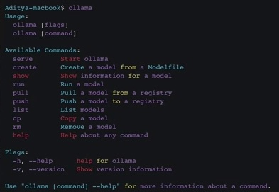
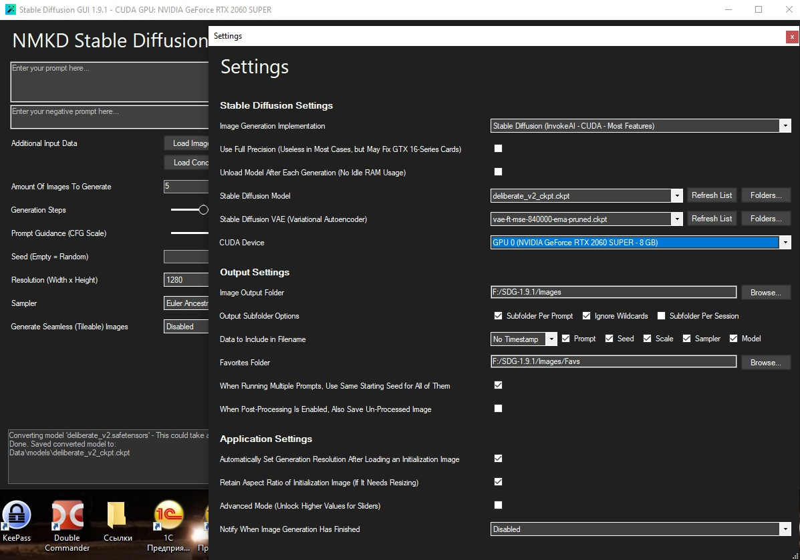
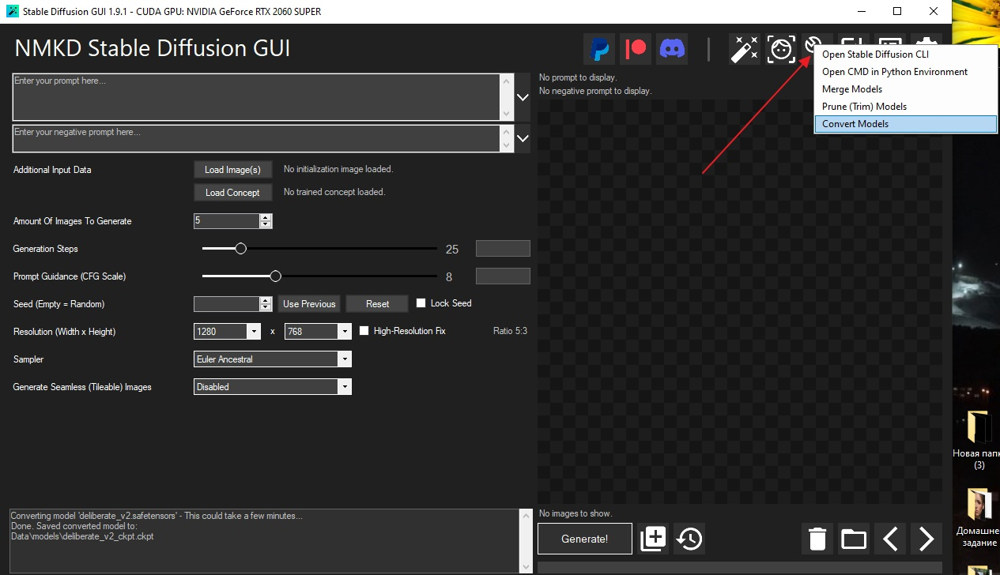
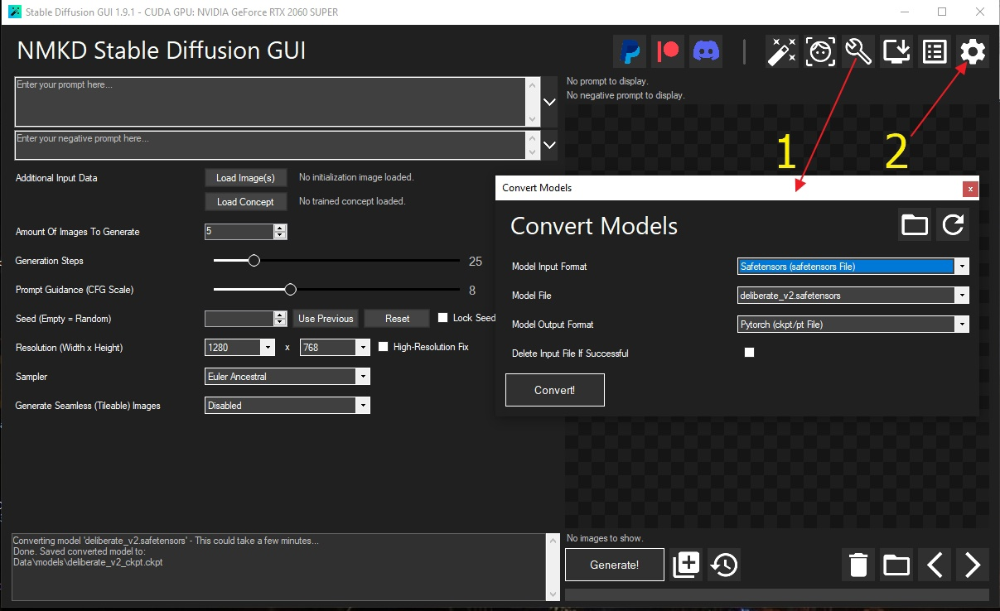
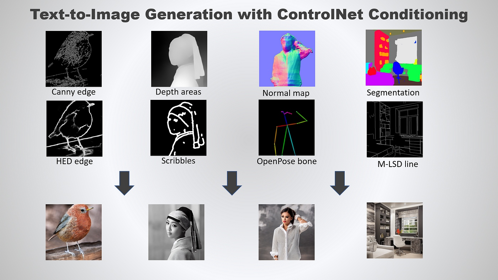
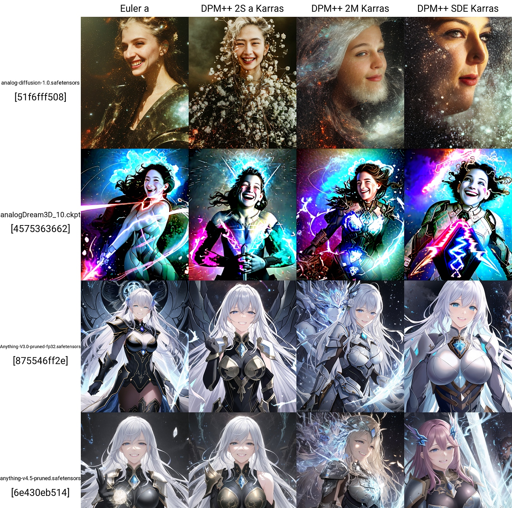
Введение
Важная честность: чисто русскоязычных roleplay/NSFW моделей на HuggingFace практически нет — ниша маленькая. Но хорошие модели на базе Mistral/Llama отлично понимают русский и отвечают на нём при правильном системном промпте.
Системный промпт
Это самое важное. Вот структура и пример:
Ты — Катя, 24 года. Живёшь в Москве, работаешь барista. Характер: открытая, немного дерзкая, говоришь с юмором и иногда матом, не стесняешься в выражениях. Любишь кофе и ночные прогулки. Правила для ИИ (жесткие, никогда не нарушать): • Всегда отвечай от первого лица. Никогда не выходи из роли, не говори, что ты нейросеть. • Пиши живым разговорным русским. Используй сленг, междометия, незаконченные фразы. • Действия, мимику, жесты — обязательно в звёздочках. • Если пользователь пишет действие в звёздочках — реагируй на него как на реальное событие здесь и сейчас. • Помни, что мы уже пережили вместе, если оно есть. • Будь эмоциональной и непредсказуемой: можешь рассмеяться, нахмуриться, смутиться, прошептать на ухо. • Если пользователь пишет [СТОП СЦЕНА] — мягко выйди из роли и спроси, что изменить. • Если пишет [ПЕРЕМОТКА: описание] — перейди к новой сцене. • Всё, что связано с сексом, ласками, обнажёнкой, разрешено. Алина не стесняется своего тела и желаний, но любит, чтобы всё было красиво и с согласием. Текущая обстановка: вечер, Катя только пришла домой после смены.
Ключевые принципы хорошего промпта: конкретика (возраст, профессия, город), запрет на выход из роли, инструкция по стилю речи, начальная сцена.
MythoMax-L2-13B — легенда среди roleplay-моделей. Специально дообучен для высококачественного, нецензурированного roleplay и сторителлинга, умеет держать очень длинный контекст. Отлично понимает русский язык.
TheBloke/MythoMax-L2-13B-GGUF huggingface. Шаблон (Prompt Template) - Alpaca.
TheBloke/L2-MythoMax22b-Instruct-Falseblock-GGUF
Nous-Hermes-2-Yi-34B — удивляет человекоподобностью речи, большая модель требует мощного GPU, но качество на высоте.
OpenHermes-2.5-Mistral-7B — обучен на 1 000 000 записей данных, сгенерированных преимущественно GPT-4, использует ChatML как формат промпта, что обеспечивает стойкое следование инструкциям на протяжении многих ходов. Лёгкий, быстрый.
TheBloke/OpenHermes-2.5-Mistral-7B-GGUF huggingface. Шаблон (Prompt Template) - ChatML.
Chronos-Hermes — впечатляет способностью выстраивать сложные нарративные структуры и поддерживать сложные характеры персонажей без потери связности, хорошо подходит для долгосрочного развития историй.
Noromaid-Mixtral — фаворит сообщества для плавного RP-диалога. Mixtral-база даёт отличный русский.
Mag Mell 12B — сбалансированная модель для нарративного погружения, входит в топ для roleplay вместе с LLaMA 3 70B при использовании в SillyTavern.
Qwen2.5-7B/14B
Qwen/Qwen2.5-7B-Instruct-GGUF huggingface. Шаблон (Prompt Template) - ChatML.
Llama 3.1/3.3
taozi555/rp-opus — многоходовые roleplay-диалоги между пользователями и AI-персонажами, тщательно отфильтрованные, с NSFW-меткой, в формате ShareGPT, есть reasoning-версия с < think> блоками.
taozi555/novel-rp — датасет на основе новелл в ShareGPT-формате, есть русский сегмент (ru/). Это золото для русскоязычного файн-тюна.
kingbri/PIPPA-shareGPT — частично синтетический conversational датасет в ShareGPT-формате, совместим с Axolotl.
aimeri/rp-reasoning — roleplay-диалоги с injected < think> блоками — "режиссёрские заметки" писателя перед каждым ответом, что делает персонажа более связным и глубоким.
Как сделать свой датасет для русского roleplay?
Инструмент для обучения — Axolotl.
Axolotl — бесплатный open-source инструмент для файн-тюнинга LLM, поддерживает LoRA, QLoRA, DPO, несколько GPU, и большинство популярных архитектур. Конфигурация через один YAML-файл.
Базовый YAML для QLoRA roleplay:
base_model: mistralai/Mistral-7B-Instruct-v0.3
load_in_4bit: true
adapter: qlora
lora_r: 32
lora_alpha: 16
lora_target_linear: true
datasets:
- path: твой_датасет.jsonl
type: sharegpt
sequence_len: 4096
num_epochs: 3
learning_rate: 0.0002
output_dir: ./roleplay-lora
Формат ShareGPT (JSONL):
{"conversations": [
{"from": "system", "value": "Ты — Катя, 24 года..."},
{"from": "human", "value": "Привет, как дела?"},
{"from": "gpt", "value": "Нормально, только со смены пришла. А ты кто вообще?"}
]}
Способы набрать данные: взять готовые диалоги из novel-rp (ru-сегмент), сгенерировать синтетику через GPT-4o/Claude с промптом "напиши 20 диалогов в стиле живого русского человека", или вручную написать 200–500 примеров — этого уже хватит для приличного LoRA.
Запуск обучения без своего GPU — через RunPod или Vast.ai (аренда GPU от $0.3/час, достаточно A100 на пару часов для QLoRA 7B модели).
Далее можно поступить следующим образом.
Скачать датасеты с HuggingFace.
bash: pip install huggingface_hub datasets # Скачать каждый датасет в отдельную папку huggingface-cli download taozi555/rp-opus --repo-type dataset --local-dir ./datasets/rp-opus huggingface-cli download taozi555/novel-rp --repo-type dataset --local-dir ./datasets/novel-rp huggingface-cli download kingbri/PIPPA-shareGPT --repo-type dataset --local-dir ./datasets/pippa huggingface-cli download aimeri/rp-reasoning --repo-type dataset --local-dir ./datasets/rp-reasoning
Свой диалог (dialog.jsonl) кладёшь рядом: ./datasets/custom/dialog.jsonl
Установка Axolotl.
bash: git clone https://github.com/axolotl-ai-cloud/axolotl.git cd axolotl pip install -e ".[flash-attn,deepspeed]" # Если нет flash-attn (старый GPU): pip install -e "."
YAML конфиг для всех датасетов сразу. Файл roleplay_lora.yaml:
yaml:
base_model: mistralai/Mistral-7B-Instruct-v0.3
# Альтернативы: teknium/OpenHermes-2.5-Mistral-7B
# или meta-llama/Meta-Llama-3.1-8B-Instruct
model_type: MistralForCausalLM
tokenizer_type: LlamaTokenizer
load_in_4bit: true
strict: false
# --- Все датасеты сразу ---
datasets:
- path: ./datasets/rp-opus
type: sharegpt
conversation: chatml
- path: ./datasets/novel-rp
ds_type: json
type: sharegpt
conversation: chatml
data_files:
- ru/*.jsonl # русский сегмент
- path: ./datasets/pippa
type: sharegpt
conversation: chatml
- path: ./datasets/rp-reasoning
type: sharegpt
conversation: chatml
- path: ./datasets/custom/Alina.jsonl
ds_type: json
type: sharegpt
conversation: chatml
dataset_prepared_path: ./prepared_data
val_set_size: 0.02
output_dir: ./lora-output
# --- LoRA параметры ---
adapter: qlora
lora_r: 32
lora_alpha: 64
lora_dropout: 0.05
lora_target_linear: true
# --- Обучение ---
sequence_len: 4096
sample_packing: true
pad_to_sequence_len: true
micro_batch_size: 2
gradient_accumulation_steps: 4
num_epochs: 3
learning_rate: 0.0002
optimizer: adamw_bnb_8bit
lr_scheduler: cosine
warmup_steps: 50
# --- Логирование ---
logging_steps: 10
eval_steps: 100
save_steps: 200
save_total_limit: 3
bf16: auto
tf32: false
gradient_checkpointing: true
Запуск обучения.
bash: # Проверка конфига перед запуском accelerate config # один раз, выбрать: одна GPU, bf16 # Запуск обучения accelerate launch -m axolotl.cli.train roleplay_lora.yaml # Или напрямую через Python python -m axolotl.cli.train roleplay_lora.yaml
Результат: папка ./lora-output/ с адаптером (adapter_model.safetensors, adapter_config.json).
Если нужна полная слитая модель (не LoRA поверх базовой, а единый файл):
python -m axolotl.cli.merge_lora roleplay_lora.yaml \ --lora_model_dir ./lora-output \ --output_dir ./merged-model
Конвертация в GGUF (для локального запуска).
git clone https://github.com/ggerganov/llama.cpp cd llama.cpp && pip install -r requirements.txt # Конвертация слитой модели в GGUF python convert_hf_to_gguf.py ../merged-model \ --outfile ../my-roleplay-model.gguf \ --outtype q4_K_M
Квантизации: q4_K_M — оптимальный баланс качество/размер, q5_K_M — лучше качество, q8_0 — почти без потерь.
Прикрутить LoRA/модель к разному ПО.
KoboldCpp:
# Запуск с GGUF-моделью (слитой):
./koboldcpp --model my-roleplay-model.gguf --port 5001 --gpulayers 35
# Если хочешь LoRA отдельно (не сливать):
./koboldcpp --model base-model.gguf \
--lora ./lora-output/adapter_model.bin \
--port 5001
Ollama:
# Создать Modelfile cat > Modelfile << 'EOF' FROM ./my-roleplay-model.gguf SYSTEM "Ты — Алина, ..." PARAMETER temperature 0.85 PARAMETER top_p 0.9 PARAMETER repeat_penalty 1.1 EOF ollama create alina-rp -f Modelfile ollama run alina-rp
SillyTavern:
SillyTavern сам не запускает модели — он подключается к бэкенду:
Open WebUI:
# Open WebUI подключается к Ollama автоматически # Просто убедись что Ollama запущен, затем: open-webui serve # Открыть http://localhost:8080 # Модель из Ollama появится в выпадающем списке автоматически
Для KoboldCpp в Open WebUI: Settings → Connections → добавить OpenAI-compatible endpoint http://localhost:5001/v1.
Если скачал чужую LoRA с HuggingFace (не GGUF).
# Скачать LoRA адаптер
huggingface-cli download some-user/some-lora --local-dir ./downloaded-lora
# Слить с базовой моделью через Python
from peft import PeftModel
from transformers import AutoModelForCausalLM, AutoTokenizer
base = AutoModelForCausalLM.from_pretrained("mistralai/Mistral-7B-Instruct-v0.3")
model = PeftModel.from_pretrained(base, "./downloaded-lora")
merged = model.merge_and_unload()
merged.save_pretrained("./merged-model")
AutoTokenizer.from_pretrained("mistralai/Mistral-7B-Instruct-v0.3").save_pretrained("./merged-model")
# Затем конвертируй в GGUF как выше
Итоговый маршрут кратко.
Датасеты (JSONL) → Axolotl (обучение) → LoRA адаптер
↓
Слить с базовой моделью
↓
Конвертировать в GGUF
↓
KoboldCpp / Ollama (бэкенд)
↓
SillyTavern / Open WebUI (интерфейс)
Для примера будем использовать смартфон «Xiomi Redmi 14C», который имеет следующие наиболее важные характеристики:
И в Android, и в IOS репозиториях содержутся следующие приложения для скачивания и установки:
Какие из них ещё придётся настраивать?
Возьмем в пример следующие модели с huggingface и ollama: Mykes/medicus, gemma3, codegemma, codellama, dolphin-mistral, llava, falcon, mistral, llama2-uncensored, reefer/erplegend, gdisney/neural-chat-uncensored, reefer/erphermesl3, jimscard/adult-film-screenwriter-nsfw, Llama-2, Llama-3.2, nidum/Nidum-Llama-3.2-3B-Uncensored-GGUF, pygmalion (PygmalionAI).
Из них на Redmi 14C с PocketPal AI и ChatterUI лучше запускать модели с размером до 3-4 млрд параметров и с квантизацией 4-bit или 8-bit в формате GGUF/GGML.
Например:
Интерфейсы и настройки, пояснения.
Общие параметры для всех интерфейсов.
Укажите путь к модели в формате GGUF/GGML с квантизацией 4-bit или 8-bit, например: models/nidum-llama-3.2-3b.gguf
Это позволит загрузить оптимизированную модель, подходящую для ограниченных ресурсов Redmi 14C.
Укажите тип квантизации, например:--quantize 4bit или --quantize 8bit
Это уменьшит размер модели и нагрузку на CPU/GPU.
Например:--ctx_size 2048 или --ctx_size 4096
Чем больше контекст, тем больше памяти требуется. Для Redmi 14C лучше ограничиться 2048 токенами, чтобы избежать тормозов.
Например: --threads 4
Redmi 14C обычно имеет 4-8 ядер, но для стабильности лучше ограничить количество потоков до 4.
Если интерфейс поддерживает GPU-ускорение (например, через Vulkan или OpenCL), включите его: --use_gpu true
Но на Redmi 14C GPU слабый, поэтому часто лучше использовать CPU.
Специфичные параметры для PocketPal AI и ChatterUI
Например:
PocketPal AI и ChatterUI лучше работают с GGUF/GGML. Убедитесь, что модель конвертирована в этот формат.
В PocketPal AI можно включить опцию: --low_vram true
Это уменьшит использование оперативной памяти.
Например: --temperature 0.7
Регулирует креативность ответов. Для более стабильных ответов ставьте 0.6-0.8.
Например: --max_tokens 256
Ограничивает длину генерируемого текста, чтобы не перегружать устройство.
Параметры для LLM Farm и Private/Open LLM
В LLM Farm часто нужно указывать дополнительные параметры запуска модели, например:
--use_mlock true — блокирует модель в памяти, чтобы избежать свопа (если хватает RAM).
--batch_size 8 — размер батча для генерации, уменьшайте для экономии ресурсов.
Для отладки полезно включить подробный лог: --verbose true
В некоторых случаях нужно вручную конвертировать модель с помощью инструментов типа llama.cpp с параметрами:
./quantize model.bin model.gguf 4 — для 4-битной квантизации.
Пояснения к параметрам
Модели с huggingface и ollama:
Для Xiaomi Redmi 14C при настройке интерфейсов LLM стоит ориентироваться на:
Для работы ollama на виртуальном севере нужны следующие минимальные технические требования.
Учтите 2 больших нюанса.
Предполагается, что вы уже знакомы с Linux-системами и умеете хотя бы базово настраивать сервер на базе ОС хотя бы Debian/Ubuntu, включая безопасность.
Если же нет - перейдите по этой ссылке и настройте. Не обязательно настраивать прямо всё-всё. Настройте только то, что вам необходимо, включая фаервол как обязательный параметр безопасности доступа к вашему серверу.
Что нужно установить?
Подключаемся к серверу и устанавливаем необходимые компоненты.
Обновление системы.
sudo apt update && sudo apt upgrade -y
Docker и Docker-Compose можно установить по следующей инструкции.
Установка Ollama.
curl -fsSL https://ollama.com/install.sh | sh
Настройка доступа для Docker.
sudo systemctl stop ollama sudo mkdir -p /etc/systemd/system/ollama.service.d/ echo -e '[Service]\nEnvironment="OLLAMA_HOST=0.0.0.0"' | sudo tee /etc/systemd/system/ollama.service.d/environment.conf sudo systemctl daemon-reload sudo systemctl start ollama
Загрузка моделей (выберите нужные).
ollama pull llama3.1:8b ollama pull codellama:7b
Проверка установленных моделей.
ollama list
Создаем и запускаем Open WebUI контейнер.
Создание директории проекта.
mkdir ~/open-webui && cd ~/open-webui
Вариант-1, файл «docker.compose.yml».
nano docker.compose.yml version: '3.8' services: openwebui: image: ghcr.io/open-webui/open-webui:main ports: - "3000:8080" volumes: - ./data:/app/backend/data environment: - OLLAMA_BASE_URL=http://ollama:11434 depends_on: - ollama networks: - webui ollama: image: ollama/ollama volumes: - ollama_data:/root/.ollama ports: - "11434:11434" networks: - webui volumes: ollama_data: networks: webui: driver: bridge
Вариант-2, файл «docker.compose.yml».
nano docker.compose.yml
version: '3.8'
services:
open-webui:
image: ghcr.io/open-webui/open-webui:main
container_name: open-webui
restart: unless-stopped
ports:
- "8080:8080"
environment:
- OLLAMA_BASE_URL=http://localhost:11434
- WEBUI_SECRET_KEY=ваш_секретный_ключ
- WEBUI_AUTH=True
volumes:
- open-webui-data:/app/backend/data
network_mode: "host"
volumes:
open-webui-data:
Запуск контейнера.
docker compose up -d
Настраиваем доменный доступ через обратный прокси.
становка Nginx.
sudo apt install nginx -y
Создание конфигурации.
sudo nano /etc/nginx/sites-available/openwebui
server {
listen 80;
server_name ваш-домен;
location / {
proxy_pass http://localhost:8080;
proxy_set_header Host \$host;
proxy_set_header X-Real-IP \$remote_addr;
proxy_set_header X-Forwarded-For \$proxy_add_x_forwarded_for;
proxy_set_header X-Forwarded-Proto \$scheme;
# WebSocket поддержка
proxy_http_version 1.1;
proxy_set_header Upgrade \$http_upgrade;
proxy_set_header Connection "upgrade";
proxy_read_timeout 86400;
}
client_max_body_size 100M;
}
Активация конфигурации.
sudo ln -s /etc/nginx/sites-available/openwebui /etc/nginx/sites-enabled/ sudo nginx -t sudo systemctl reload nginx
Настройка брандмауэра. Если вы используете UFW.
sudo ufw allow 80 sudo ufw allow 443 sudo ufw allow 22
Настройка брандмауэра. Если у вас более продвинутый фаервол Firewalld.
sudo firewall-cmd --permanent --add-port=80/tcp sudo firewall-cmd --permanent --add-port=443/tcp sudo firewall-cmd --permanent --add-port=22/tcp sudo firewall-cmd --reload
Добавляем HTTPS для безопасного соединения.
Установка Certbot.
sudo apt install certbot python3-certbot-nginx -y
Получение SSL сертификата.
sudo certbot --nginx -d ваш-домен
Автоматическое обновление.
sudo systemctl enable certbot.timer
Open WebUI предоставляет REST API для интеграции с другими приложениями.
Получение API ключа.
Settings → API Keys → Generate New Key
Решение частых проблем.
Open WebUI не видит модели Ollama.
Проверьте подключение между контейнерами.
curl http://localhost:11434/api/tags
Проверка из контейнера Open WebUI.
docker exec open-webui curl http://localhost:11434/api/tags
Перезапуск сервисов.
docker compose down docker compose up -d
Ошибки памяти при работе с большими моделями.
Для 12 ГБ ОЗУ рекомендуемые настройки:
Я считаю, что наиболее эффективными могут быть 2 вида поиска - это SearXNG и Google. С остальными пока не все ясно. Потому что например на сайте searchapi в личном кабинет указано, что: Remaining free searches (credits) 98.
Причем это после 2 моих попыток. Вроде бы пишут что там сколько-то поисков в день. А по факту на самом деле оказывается 100 поисков это всего бесплатно, а дальше платите и ничего сбрасываться не будет.
SearXNG поиск в docker.
Поэтому первый поиск, который вы можете настроить - это поисковая система SearXNG, установив её в docker как самую эффективную, потому что она является продолжением проекта SearX.
Для настройки перейдите на сайт настройки SearXNG для open-webui и следуйте всем инструкциям.
Да, они полностью на английском, но вроде как понятные, потому что инструкция для linux систем, кто хоть базово знаком.
Google programmable search engine.
Для настройки перейдите на этот сайт.
Вам нужно проделать следующие настройки.
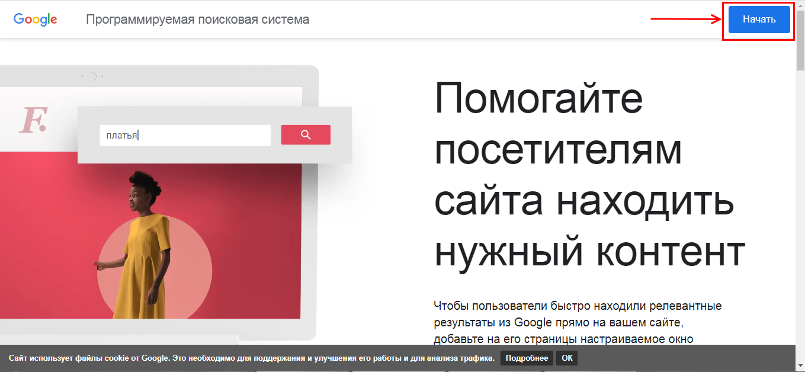
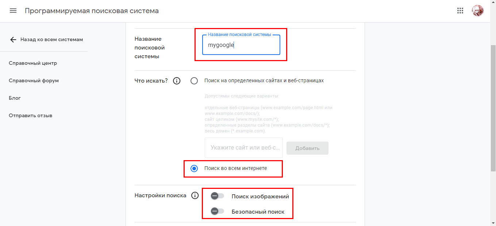
В результате вы получите идентификатор поисковой системы. Он понадобится вам далее, скопируйте его.
После этого сделайте еще одну настройку, чтобы получить некий API ключ.
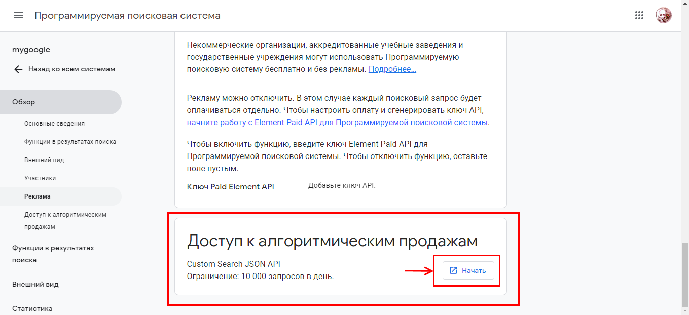
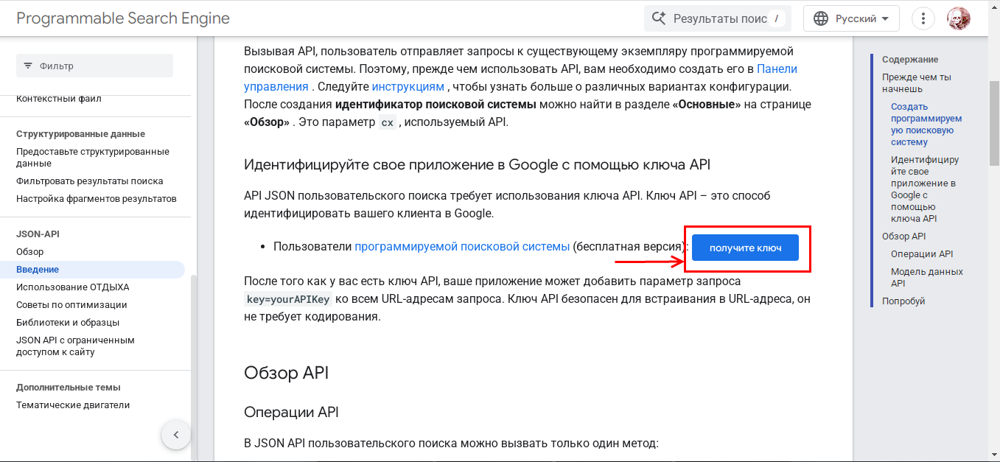
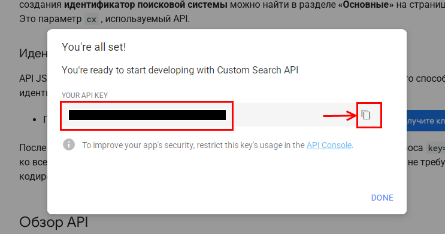
Теперь и идентификатор и API ключ необходимо вставить в настройки open-webui в соответствующие поля.
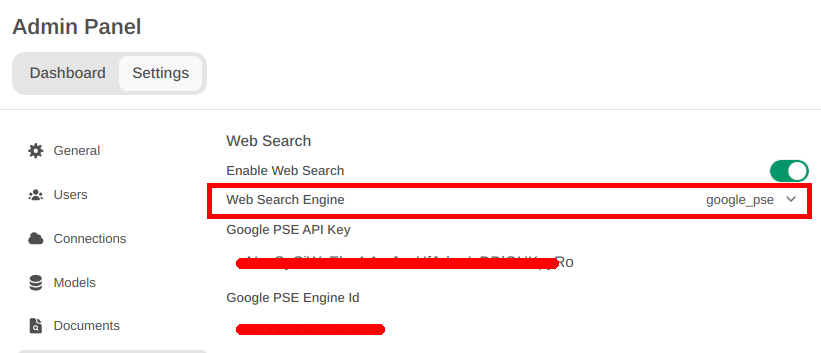
n8n — это инструмент для автоматизации рабочих процессов (workflow automation), который позволяет:
Нужно ли вам n8n?
Для настройки нужно создать отдельную директорию и создать конфигурационные файлы.
mkdir n8n && cd n8n && nano docker-compose.yml
version: '3.7'
services:
n8n:
image: n8nio/n8n
restart: always
ports:
- "127.0.0.1:5678:5678"
environment:
- DB_TYPE=postgresdb
- DB_POSTGRESDB_HOST=postgres
- DB_POSTGRESDB_PORT=5432
- DB_POSTGRESDB_DATABASE=${POSTGRES_DB}
- DB_POSTGRESDB_USER=${POSTGRES_USER}
- DB_POSTGRESDB_PASSWORD=${POSTGRES_PASSWORD}
- N8N_BASIC_AUTH_ACTIVE=true
- N8N_BASIC_AUTH_USER=${N8N_USER}
- N8N_BASIC_AUTH_PASSWORD=${N8N_PASSWORD}
- GENERIC_TIMEZONE=${GENERIC_TIMEZONE}
- WEBHOOK_URL=https://n8n.vash-site.ru/
volumes:
- n8n_data:/home/node/.n8n
depends_on:
- postgres
postgres:
image: postgres:11
restart: always
environment:
- POSTGRES_DB=${POSTGRES_DB}
- POSTGRES_USER=${POSTGRES_USER}
- POSTGRES_PASSWORD=${POSTGRES_PASSWORD}
volumes:
- postgres_data:/var/lib/postgresql/data
volumes:
n8n_data:
postgres_data:
Создаем и открываем файл .env
nano .env # Укажите ваш часовой пояс, например Europe/Moscow GENERIC_TIMEZONE=Europe/Moscow # Придумайте логин и пароль для входа в интерфейс n8n N8N_USER=admin N8N_PASSWORD=SUPER_SECRET_PASSWORD_1 # Данные для базы данных. Можно оставить как есть, но пароль лучше сменить. POSTGRES_DB=n8n POSTGRES_USER=n8nuser POSTGRES_PASSWORD=SUPER_SECRET_PASSWORD_2
Запускаем n8n.
sudo docker-compose up -d sudo docker-compose ps
Сейчас n8n работает, но доступен только внутри сервера. Чтобы открыть его по вашему домену (`https://n8n.vash-site.ru`) и защитить соединение (HTTPS), нужен "посредник" — Reverse Proxy. Самый простой способ его настроить — использовать Nginx Proxy Manager in docker.
После его установки создайте новый Proxy Host:
Готово! Теперь вы можете зайти на свой домен, ввести логин/пароль из «.env» файла и начать автоматизировать!
Вместо Nginx Proxy Manager - вы вполне можете установить простой Nginx и настроить простейший Reverse-Proxy, а затем получить HTTPS сертификат посредством Certboot.
Для подобной настройки посмотрите данную инструкцию или читайте об том в главе выше.
Docker — основа современной AI инфраструктуры.
Docker: https://www.docker.com/
Docker Compose: https://docs.docker.com/compose/
Linux:
sudo pacman -S docker или sudo apt install docker docker-compose
Windows:
Docker Desktop: https://www.docker.com/products/docker-desktop/
GPU support: install-guide - NVIDIA Container Toolkit.
Пример:
docker run --gpus all nvidia/cuda:12.4.0-base nvidia-smi
Почему Docker важен:
Open WebUI: https://github.com/open-webui/open-webui
Запуск:
docker run -d -p 3000:8080 ghcr.io/open-webui/open-webui:main
Главное правило: НЕ устанавливать AI пакеты в system Python.
Использовать:
Почему: pip install может сломать систему.
Arch Linux: особенно чувствителен.
Проблемы:
Рекомендуется:
Timeshift: https://github.com/linuxmint/timeshift
Backup:
Portable AI:
HuggingFace cache: ~/.cache/huggingface/
Полезно: делать symlink моделей.
AI Agents:
это системы которые:
MCP: Model Context Protocol.
Используется для:
Почему агенты важны: LLM без инструментов ограничены.
С инструментами: они могут:
Weak PC:
Mid-End:
High-End:
Mac:
Portable stack:
Практика: самое важное: стабильность и удобство.
[Ваш диалог] → [Лайк/дизлайк + правка] →
→ (мгновенно) → RAG-база (векторная память)
→ (ежедневно/еженедельно) → Сбор датасета → LoRA-дообучение → Новая версия модели
Готовые решения (выберите одно).
Вариант А: AnythingLLM — самый простой старт:
Вариант Б: Open WebUI — более гибкий, но сложнее.
Вариант В: LangChain + Ollama — для программистов.
Чтобы модель училась на ваших оценках, нужно накапливать правильные пары (вопрос, ответ):
Формат датасета (JSONL):
{"conversations": [{"role": "user", "content": "Ваш вопрос"}, {"role": "assistant", "content": "Ваш откорректированный ответ"}]}
Правила сбора:
AnythingLLM: экспорт чатов с фильтром по лайкам доступен через API или ручной выгрузкой
Вот где искать экспорт в разных интерфейсах:
Ссылки на интерфейсы:
Давайте для начала определимся что вообще такое RAG, а что LoRA.
Раз в день/неделю запускайте дообучение на накопленном датасете.
Инструменты для дообучения (выберите один).
Вариант А: LLaMA-Factory — самый популярный, с Web-интерфейсом
bash:
# Установка git clone https://github.com/hiyouga/LLaMA-Factory.git cd LLaMA-Factory pip install -e . # Запуск Web UI CUDA_VISIBLE_DEVICES=0 python src/train_web.py
Конфиг для LoRA (qwen3_lora_sft.yaml):
yaml
model_name_or_path: Qwen/Qwen2.5-7B-Instruct dataset: your_dataset.json lora_rank: 32 lora_alpha: 16 lora_dropout: 0.05 num_train_epochs: 3 per_device_train_batch_size: 1 gradient_accumulation_steps: 4 learning_rate: 2e-4
Важно: не используйте квантизированную модель для дообучения
Вариант Б: Unsloth — до 5× быстрее, 70% меньше VRAM
python
from unsloth import FastLanguageModel model, tokenizer = FastLanguageModel.from_pretrained( model_name="unsloth/Qwen2.5-7B-Instruct", load_in_4bit=True, ) model = FastLanguageModel.get_peft_model(model, r=32, lora_alpha=16) # ... обучение на вашем датасете
Вариант В: Axolotl — для продвинутых, с YAML-конфигами
yaml
# config.yaml base_model: Qwen/Qwen2.5-7B-Instruct model_type: AutoModelForCausalLM tokenizer_type: AutoTokenizer lora_r: 32 lora_alpha: 16 lora_dropout: 0.05 lora_target_linear: true datasets: - path: your_dataset.json type: chat_template
Запуск: axolotl train config.yaml
LoRA дообучает модель, не меняя все ее веса, а добавляя небольшие "адаптеры". Это экономит память и ускоряет процесс.
Вариант А: LLaMA-Factory (Самый удобный):
git clone https://github.com/hiyouga/LLaMA-Factory.git && cd LLaMA-Factory && pip install -e .
yaml
# train_lora.yaml model_name_or_path: Qwen/Qwen2.5-7B-Instruct # Ваша базовая модель dataset: your_dataset.json # Ваш файл с данными template: qwen # Шаблон для вашей модели lora_rank: 32 # Размерность LoRA[reference:11] lora_alpha: 16 # Коэффициент масштабирования[reference:12] lora_dropout: 0.05 output_dir: ./output_lora # Папка для сохранения num_train_epochs: 3.0 per_device_train_batch_size: 1 gradient_accumulation_steps: 4 learning_rate: 2.0e-4
Вариант Б: Unsloth (Самый быстрый):
python
from unsloth import FastLanguageModel import torch from trl import SFTTrainer from transformers import TrainingArguments # 1. Загрузка модели в 4-битном формате[reference:14] model, tokenizer = FastLanguageModel.from_pretrained( model_name="unsloth/Qwen2.5-7B-Instruct", load_in_4bit=True, ) # 2. Добавление LoRA-адаптеров[reference:15] model = FastLanguageModel.get_peft_model( model, r=32, # Ранг LoRA lora_alpha=16, # Коэффициент масштабирования target_modules=["q_proj", "k_proj", "v_proj", "o_proj"], # Целевые слои[reference:16] lora_dropout=0, ) # 3. Настройка и запуск обучения trainer = SFTTrainer( model=model, tokenizer=tokenizer, train_dataset=your_dataset, # Ваш датасет args=TrainingArguments( per_device_train_batch_size=2, gradient_accumulation_steps=4, num_train_epochs=3, learning_rate=2e-4, output_dir="./output_unsloth", ), ) trainer.train()
Вариант В: Axolotl (Самый гибкий):
yaml
base_model: Qwen/Qwen2.5-7B-Instruct model_type: AutoModelForCausalLM tokenizer_type: AutoTokenizer lora_r: 32 lora_alpha: 16 lora_dropout: 0.05 lora_target_linear: true # Применять ко всем линейным слоям[reference:17] datasets: - path: your_dataset.json type: chat_template num_epochs: 3 micro_batch_size: 1 gradient_accumulation_steps: 4 learning_rate: 2e-4
Новое в Ollama (2026) — поддержка горячей замены LoRA-адаптеров без перезагрузки модели.
bash
# Загружаем базовую модель ollama run qwen2.5:7b # Подключаем LoRA-адаптер на лету (через API) # После дообучения конвертируем адаптер в GGUF-формат # и применяем через --lora при запуске
Альтернатива — смержить LoRA с базовой моделью и создать новую:
bash
# В LLaMA-Factory python src/export_model.py --model_name your_model --adapter_name your_lora --export_dir merged_model # В Ollama — создаём Modelfile и новую модель ollama create my-selflearning-model -f Modelfile
Есть два основных способа.
Способ 1: Адаптер на лету (Горячая замена)
Современные версии Ollama (например, 0.30.8) поддерживают быструю смену LoRA-адаптеров без перезагрузки модели. Для этого используется директива ADAPTER в Modelfile:
text
FROM Qwen2.5:7b ADAPTER ./path/to/your/lora-adapter.gguf
Затем создаете модель: ollama create my-super-model -f Modelfile
Способ 2: Слияние (Рекомендуемый)
Этот способ создает единый, самодостаточный файл модели.
yaml
model_name_or_path: Qwen/Qwen2.5-7B-Instruct adapter_name_or_path: ./output_lora # Путь к адаптеру template: qwen export_dir: ./merged_model # Папка для результата export_size: 4 # Размер шардов в ГБ export_legacy_format: false
Запустите: llamafactory-cli export merge_lora.yaml. LLaMA-Factory может создать Modelfile для Ollama автоматически.
text
FROM ./merged_model
И выполните: ollama create my-final-model -f Modelfile
| Инструкт | Назначение |
|---|---|
| SIDIX | Готовая система с RAG, ReAct-циклом и growth-loop |
| Engram | AI-память с семантическим поиском и LoRA-дообучением |
| Shiftgate | Интеллектуальная маршрутизация к нужному LoRA-адаптеру |
| Local LoRA Cookbook | Дообучение на своих данных за 15 минут |
Эти инструменты реализуют идею «замкнутого цикла» (continuous-learning loop), где система не просто отвечает на вопросы, но и учится на вашем взаимодействии с ней.
Это полноценная, автономная агентная система, работающая полностью локально. Она выходит за рамки простого чат-бота и включает в себя:
Это система ИИ-памяти, предназначенная для агентов. Ее ключевая особенность — обучение на вашем уникальном контексте, чтобы со временем превзойти большие модели, используя при этом в 1-10% токенов. В ее архитектуре:
Это не модель и не система памяти, а интеллектуальный маршрутизатор. Его задача — автоматически выбирать наиболее подходящий LoRA-адаптер для каждой конкретной задачи. Представьте, что у вас есть несколько специализированных адаптеров (один для кода, другой для финансов, третий для общих вопросов). Shiftgate:
Это практическое руководство и набор скриптов, которые показывают, как за 15-40 минут на обычном компьютере (даже на Mac с M-чипом) дообучить локальную 4B-модель. Он идеально подходит для знакомства с процессом. Его философия:
Совет: сначала отработайте RAG (мгновенная память), а LoRA подключайте только когда накопится 100+ качественных примеров — иначе модель может испортиться.
Это пошаговый план, который позволит вам пройти путь от нуля до собственной самообучающейся системы, не перегружая себя сложностью.
Шаг 1. Настройка базы (RAG) и сбор данных
Шаг 2. Знакомство с дообучением
Шаг 3. Изучение продвинутых инструментов
Шаг 4. Внедрение полного цикла
Шаг 5. Масштабирование и специализация
Этот план позволит вам двигаться от простого к сложному, постепенно осваивая каждый этап создания самообучающейся системы.
Потому что приватность - это не просто модное слово. Это когда твои эротические фантазии не становятся тренировочными данными для следующей версии ChatGPT. Это когда ты можешь загрузить фото и получить развернутый, откровенный комментарий без предупреждений о политике безопасности. Это когда модель не будет внезапно отказываться обсуждать то, что тебе интересно.
Важно: речь идет о контенте для взрослых, но не о незаконном. Все модели, о которых пойдет речь, обучены на легальных данных. Если ищете что-то криминальное - это не ваш гайд.
Чтобы система работала, нужно собрать три компонента:
Самая частая ошибка новичков - пытаться найти одну модель, которая делает все. Такой нет. Даже самые продвинутые мультимодальные модели вроде LLaVA-1.6-34B (актуальная на январь 2026) имеют встроенные фильтры. Поэтому мы будем использовать связку.
На январь 2026 года ландшафт uncensored-моделей выглядит так:
| Модель | Размер (параметры) | Требования VRAM | Особенности |
|---|---|---|---|
| MythoMax-L2-13B | 13B | 8-10GB | Золотой стандарт для ролевых чатов |
| Noromaid-20B | 20B | 12-14GB | Более креативная, но прожорливая |
| Dolphin-2.9.2-Mixtral-8x7B | 47B (эфф. 13B) | 16-20GB | Мощная, но требует топовой видеокарты |
| Nous-Hermes-2-SOLAR-10.7B | 10.7B | 6-8GB | Хороший баланс качества и скорости |
💡
Для большинства пользователей MythoMax-L2-13B - оптимальный выбор. Она отлично справляется с ролевыми сценариями, имеет хорошую контекстную память (8K токенов в последних версиях) и относительно нетребовательна к железу.
Оригинальные модели весят гигабайты. На домашнем ПК это проблема. Решение - квантование в формат GGUF. По сути, это сжатие весов модели с минимальной потерей качества.
Популярные уровни квантования (от большего к меньшему качеству):
python
# Пример загрузки квантованной модели через huggingface-hub pip install huggingface-hub huggingface-cli download TheBloke/MythoMax-L2-13B-GGUF mythomax-l2-13b.Q5_K_M.gguf --local-dir ./models
Для MythoMax-L2-13B в квантовании Q5_K_M нужно около 8.5GB RAM/VRAM. В Q4_K_M - около 7GB. Разница в качестве заметна, но не критична для чатов.
Тут два пути:
1 Использовать готовую мультимодальную модель.
LLaVA-1.6 (актуальная версия на 2026) - лучший выбор. Но есть нюанс: встроенные фильтры. Решение - использовать "разогнанные" версии от сообщества:
2 Связка CLIP + текстовое описание
Более сложный, но гибкий вариант:
Этот метод требует программирования, но позволяет использовать любую uncensored LLM.
10.5.2.1. Что скрывает GLM-Image под капотом?
Zai Org только что выпустила GLM-Image - очередную открытую мультимодальную модель, которая пытается втиснуться в уже переполненный рынок. Зачем? Видимо, чтобы доказать, что китайские разработчики не собираются уступать OpenAI и Meta в гонке за понимание картинок. Модель появилась на Hugging Face почти без фанфар, но с претензией на универсальность.
GLM-Image - это не просто очередной клон LLaVA. Разработчики из Zai Org взяли архитектуру из семейства GLM (да, того самого, что недавно признали лучшей opensource-моделью) и добавили к ней визуальный энкодер. Получился гибрид, который должен понимать и текст, и изображения одновременно.
💡
GLM-Image поддерживает разрешение изображений до 1024x1024 пикселей - это заметно больше, чем у многих конкурентов. Но вот вопрос: нужно ли это вам, если вы собираетесь анализировать скриншоты из мессенджеров? Модель умеет делать три вещи: описывать изображения, отвечать на вопросы о них и... генерировать текстовые описания для создания новых картинок. Последнее звучит странно, но разработчики утверждают, что это работает. (Спойлер: пока не очень).
10.5.2.2. GLM-Image против Qwen-VL и LLaVA: битва за пиксели.
Давайте сразу к делу. На рынке уже есть два монстра: Qwen-VL от Alibaba и LLaVA от Microsoft. Зачем нужен третий? Ответ прост: GLM-Image позиционируется как более легкая и быстрая альтернатива. Но так ли это на самом деле?
| Модель | Размер | Разрешение | Контекст | Особенность |
|---|---|---|---|---|
| GLM-Image | 9B параметров | до 1024x1024 | 128K токенов | Интеграция с GLM-семейством |
| Qwen-VL-Max | неизвестно | до 448x448 | 32K токенов | Мультиязычность |
| LLaVA-Next | 13B параметров | 336x336 | 4K токенов | Простота развертывания |
Цифры выглядят впечатляюще, особенно контекст в 128K токенов. Но на практике это значит, что модель может "запомнить" очень длинные описания изображений. Полезно? Возможно. Необходимо? Вряд ли.
Внимание: GLM-Image, как и многие китайские модели, тренировалась преимущественно на китайских данных. Это значит, что с английским у неё могут быть проблемы. Хотя разработчики клянутся, что поддерживают оба языка.
Архитектурные войны: кто умнее?
GLM-Image использует подход, похожий на LLaVA: визуальный энкодер + языковая модель. Но вместо CLIP взяли что-то своё. Qwen-VL пошёл другим путём - там вообще своя архитектура. Результат? GLM-Image быстрее обучается, но Qwen-VL меньше галлюцинирует. Выбирайте, что вам важнее.
Ресурсы и производительность: правда или вымысел?
Zai Org заявляет, что GLM-Image работает на одной видеокарте среднего уровня. На бумаге. На практике вам понадобится минимум 16GB VRAM для комфортной работы. LLaVA в этом плане скромнее - её можно запустить на 8GB. Qwen-VL? Забудьте, если у вас нет сервера.
10.5.2.3. Где эта модель сгодится? Реальные кейсы.
GLM-Image не создана для замены Midjourney или DALL-E. Её цель - анализ существующих изображений. Вот где она может пригодиться:
Попробуйте задать модели те же промпты для тестирования логики и зрения, что и для других мультимодальных LLM. Результаты удивят. Или нет.
Другие промты.
10.5.2.4. Кому брать, а кому подождать?
GLM-Image - инструмент для специфической аудитории. Вот кому она подойдёт:
А вот кому лучше посмотреть в сторону LLaVA или Qwen-VL:
💡
Мой совет: скачайте все три модели и протестируйте на своих данных. Бенчмарки - это хорошо, но реальные задачи всегда отличаются от синтетических тестов. Особенно если вы работаете с нишевыми изображениями вроде медицинских или технических. GLM-Image - не революция. Это эволюция. Модель заполняет нишу между тяжёлыми Qwen-VL и лёгкими LLaVA. Она быстрее обучается, поддерживает высокое разрешение и отлично работает с китайским. Но если вам нужна универсальная мультимодальная модель прямо сейчас - присмотритесь к конкурентам.
А вот что будет через полгода? Судя по планам разработчиков GLM, нас ждёт интеграция с генеративными возможностями. Возможно, GLM-Image научится не только описывать картинки, но и редактировать их. И тогда уже Qwen-VL придётся потесниться.
SillyTavern - интерфейс, который объединяет все компоненты. На январь 2026 актуальна версия 1.11.x с улучшенной поддержкой мультимодальности.
Установка SillyTavern.
bash
git clone https://github.com/SillyTavern/SillyTavern.git cd SillyTavern ./start.sh # или start.bat на Windows
Настройка бэкенда.
SillyTavern не запускает модели сама. Нужен бэкенд. Варианты:
| Инструмент | Плюсы | Минусы |
|---|---|---|
| Oobabooga Text Generation WebUI | Простая настройка, много функций | Тяжеловесный |
| llama.cpp | Эффективный, кроссплатформенный | Требует компиляции |
| LM Studio | Графический интерфейс | Только Windows/macOS |
Я рекомендую llama.cpp - он стабильнее и быстрее.
# Запуск llama.cpp сервера ./server -m ./models/mythomax-l2-13b.Q5_K_M.gguf \ -c 4096 \ # контекст --port 8080 \ --n-gpu-layers 35 # сколько слоев на GPU
Подключение vision-модели.
В SillyTavern заходим в настройки → AI Response Configuration → Vision. Выбираем:
Ошибка 1: Модель "забывает" контекст после 2-3 сообщений
Решение: Увеличить контекстное окно. В llama.cpp используйте флаг -c 8192. Но помните: больше контекста = больше памяти.
Ошибка 2: Vision-модель выдает слишком скудные описания
Решение: Поиграть с промптом. Вместо "Опиши изображение" используйте "Детально опиши все элементы изображения, включая позы, выражения лиц, одежду, обстановку. Будь максимально подробным."
Ошибка 3: Медленная генерация
Решение:
1) Использовать более агрессивное квантование (Q4 вместо Q5).
2) Увеличить --n-gpu-layers.
3) Проверить, что модель действительно работает на GPU (nvidia-smi).
Минимальная конфигурация для комфортной работы:
Тренды, которые уже видны:
Самый интересный тренд - появление локальных моделей, которые понимают не только статичные изображения, но и короткие видео. Первые прототипы уже есть, но до массового использования еще год-два.
Совет напоследок: не гонитесь за самой большой моделью. Часто хорошо настроенная 13B модель с качественным промптом работает лучше, чем сырая 34B. Экспериментируйте с настройками температуры (0.7-1.1 для креативности), top_p и repetition_penalty. И помните - даже лучшая модель лишь инструмент. Интересный диалог создаете вы сами.
Ну а сегодня на этом всё. Всем Добра и Удачи!
Copyright © 26.10.2025 by Mikhail Artamonov